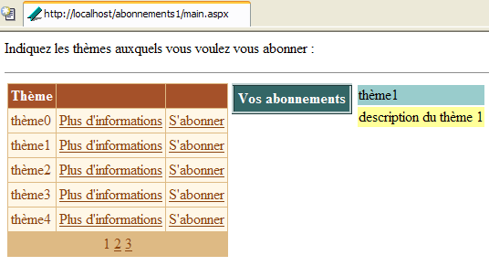
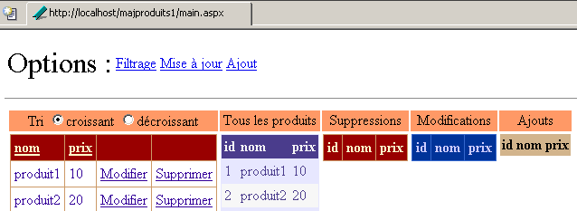
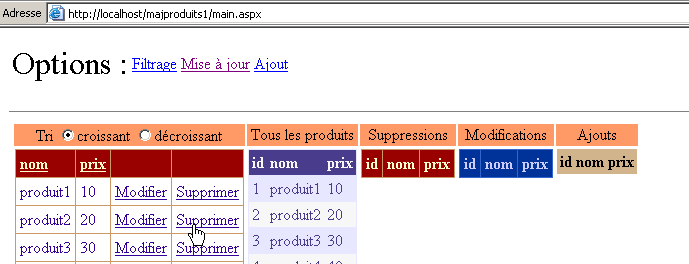
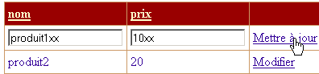
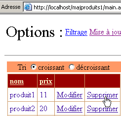
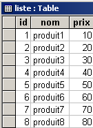
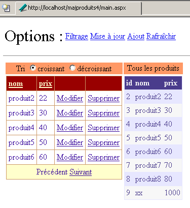

9. Componentes de servidor ASP - 3
9.1. Introduction
Continuamos o nosso trabalho na interface do utilizador, aprofundando as capacidades dos componentes [DataList] e [DataGrid], nomeadamente no que diz respeito à atualização dos dados que apresentam
9.2. Gerir os eventos associados aos dados dos componentes com ligação de dados
9.2.1. O exemplo
Consideremos a seguinte página:
 |
A página inclui três componentes associados a uma lista de dados:
- um componente [DataList] denominado [DataList1]
- um componente [DataGrid] denominado [DataGrid1]
- um componente [Repeater] denominado [Repeater1]
A lista de dados associada é o tabuleiro {"zero", "um", "dois", "três"}. A cada um destes dados está associado um grupo de dois botões denominados [Infos1] e [Infos2]. O utilizador clica num dos botões e é exibido um texto com o nome do botão em que clicou. Pretende-se aqui mostrar como gerir uma lista de botões ou de ligações.
9.2.2. A configuração dos componentes
O componente [DataList1] está configurado da seguinte forma:
<asp:datalist id="DataList1" ... runat="server">
<SelectedItemStyle ...</SelectedItemStyle>
<HeaderTemplate>
[début]
</HeaderTemplate>
<FooterTemplate>
[fin]
</FooterTemplate>
<ItemStyle ...></ItemStyle>
<ItemTemplate>
<P><%# Container.DataItem %>
<asp:Button runat="server" Text="Infos1" CommandName="infos1"></asp:Button>
<asp:Button runat="server" Text="Infos2" CommandName="infos2"></asp:Button></P>
</ItemTemplate>
<FooterStyle ...></FooterStyle>
<HeaderStyle ...></HeaderStyle>
</asp:datalist>
Omitimos tudo o que dizia respeito à apresentação do [DataList] para nos concentrarmos apenas no seu conteúdo:
- a secção <HeaderTemplate> define o cabeçalho do [DataList] e a secção <FooterTemplate> o seu rodapé.
- a secção <ItemTemplate> é o modelo de apresentação utilizado para cada um dos dados da lista de dados associada. Nela encontram-se os seguintes elementos:
- o valor do dado atual da lista de dados associada ao componente: <%# Container.DataItem %>
- dois botões intitulados, respetivamente, [Infos1] e [Infos2]. A classe [Button] possui um atributo [CommandName] que é utilizado aqui. Este atributo permitir-nos-á determinar qual é o botão que originou um evento no [DataList]. Para gerir os cliques nos botões, teremos apenas um único gestor de eventos, que estará associado ao próprio [DataList] e não aos botões. Este gestor receberá uma informação que indica em que linha do [DataList] ocorreu o clique. O atributo [CommandName] permitirá saber em que botão da linha ocorreu.
O componente [Repeater1] está configurado de forma muito semelhante:
<asp:repeater id="Repeater1" runat="server">
<HeaderTemplate>
[début]<hr />
</HeaderTemplate>
<FooterTemplate>
<hr />
[fin]
</FooterTemplate>
<SeparatorTemplate>
<hr />
</SeparatorTemplate>
<ItemTemplate>
<%# Container.DataItem %>
<asp:Button runat="server" Text="Infos1" CommandName="infos1"></asp:Button>
<asp:Button runat="server" Text="Infos2" CommandName="infos2"></asp:Button></P>
</ItemTemplate>
</asp:repeater>
Basta adicionar uma secção <SeparatorTemplate> para que os dados sucessivos apresentados pelo componente sejam separados por uma barra horizontal.
Por fim, o componente [DataGrid1] está configurado da seguinte forma:
<asp:datagrid id="DataGrid1" ... runat="server" PageSize="2" AllowPaging="True">
<SelectedItemStyle ...></SelectedItemStyle>
<AlternatingItemStyle ...></AlternatingItemStyle>
<ItemStyle ...></ItemStyle>
<HeaderStyle ...></HeaderStyle>
<FooterStyle ....></FooterStyle>
<Columns>
<asp:ButtonColumn Text="Infos1" ButtonType="PushButton" CommandName="Infos1">
</asp:ButtonColumn>
<asp:ButtonColumn Text="Infos2" ButtonType="PushButton" CommandName="Infos2">
</asp:ButtonColumn>
</Columns>
<PagerStyle .... Mode="NumericPages"></PagerStyle>
</asp:datagrid>
Também aqui omitimos as informações de estilo (cores, larguras, etc.). Estamos no modo de geração automática de colunas, que é o modo predefinido do [DataGrid]. Isto significa que haverá tantas colunas quantas as existentes na fonte de dados. Neste caso, existe uma. Adicionámos mais duas colunas marcadas com <asp:ButtonColumn>. Nelas, definimos informações semelhantes às definidas para os outros dois componentes, bem como o tipo de botão, neste caso [PushButton]. O tipo predefinido é [LinkButton], c.a.d. um link. Além disso, os dados serão paginados [AllowPaging=true] com um tamanho de página de dois elementos [PageSize=2].
9.2.3. O código de apresentação da página
O código de apresentação da nossa página de exemplo foi colocado num ficheiro [main.aspx]:
<%@ page codebehind="main.aspx.vb" inherits="vs.main" autoeventwireup="false" %>
<HTML>
<HEAD>
</HEAD>
<body>
<form runat="server">
<P>Gestion d'événements de composants associés à des listes de données</P>
<HR width="100%" SIZE="1">
<table cellSpacing="1" cellPadding="1" bgColor="#ffcc00" border="1">
<tr>
<td ...>DataList</td>
<td ...>DataGrid</td>
<td ...>Repeater</td>
</tr>
<tr>
<td ...>
<asp:datalist id="DataList1" ... runat="server">
<HeaderTemplate>
[début]
</HeaderTemplate>
<FooterTemplate>
[fin]
</FooterTemplate>
<ItemStyle ...></ItemStyle>
<ItemTemplate>
<P><%# Container.DataItem %>
<asp:Button runat="server" Text="Infos1" CommandName="infos1"></asp:Button>
<asp:Button runat="server" Text="Infos2" CommandName="infos2"></asp:Button></P>
</ItemTemplate>
<FooterStyle ...></FooterStyle>
<HeaderStyle ....></HeaderStyle>
</asp:datalist>
<P></P>
</td>
<td ...>
<asp:datagrid id="DataGrid1" ... runat="server" PageSize="2" AllowPaging="True">
<AlternatingItemStyle ...></AlternatingItemStyle>
<ItemStyle ...></ItemStyle>
<HeaderStyle ...></HeaderStyle>
<FooterStyle ...></FooterStyle>
<Columns>
<asp:ButtonColumn Text="Infos1" ButtonType="PushButton" CommandName="Infos1">
</asp:ButtonColumn>
<asp:ButtonColumn Text="Infos2" ButtonType="PushButton" CommandName="Infos2">
</asp:ButtonColumn>
</Columns>
<PagerStyle ... Mode="NumericPages"></PagerStyle>
</asp:datagrid>
</td>
<td ...>
<asp:repeater id="Repeater1" runat="server">
<HeaderTemplate>
[début]<hr />
</HeaderTemplate>
<FooterTemplate>
<hr />
[fin]
</FooterTemplate>
<SeparatorTemplate>
<hr />
</SeparatorTemplate>
<ItemTemplate>
<%# Container.DataItem %>
<asp:Button runat="server" Text="Infos1" CommandName="infos1"></asp:Button>
<asp:Button runat="server" Text="Infos2" CommandName="infos2"></asp:Button></P>
</ItemTemplate>
</asp:repeater>
</td>
</tr>
</table>
<P><asp:label id="lblInfo" runat="server"></asp:label></P>
<P></P>
</form>
</body>
</HTML>
No código acima, omitimos o código de formatação (cores, linhas, tamanhos, etc.)
9.2.4. O código de controlo da página
O código de controlo da aplicação foi colocado no ficheiro [main.aspx.vb]:
Public Class main
Inherits System.Web.UI.Page
' componentes da página
Protected WithEvents DataList1 As System.Web.UI.WebControls.DataList
Protected WithEvents lblInfo As System.Web.UI.WebControls.Label
Protected WithEvents DataGrid1 As System.Web.UI.WebControls.DataGrid
Protected WithEvents Repeater1 As System.Web.UI.WebControls.Repeater
' a fonte de dados
Protected textes() As String = {"zéro", "un", "deux", "trois"}
Private Sub Page_Load(ByVal sender As System.Object, ByVal e As System.EventArgs) Handles MyBase.Load
If Not IsPostBack Then
'ligações à fonte de dados
DataList1.DataSource = textes
DataGrid1.DataSource = textes
Repeater1.DataSource = textes
Page.DataBind()
End If
End Sub
Private Sub DataList1_ItemCommand(ByVal source As Object, ByVal e As System.Web.UI.WebControls.DataListCommandEventArgs) Handles DataList1.ItemCommand
' ocorreu um evento numa das linhas do [datalist]
lblInfo.Text = "Vous avez cliqué sur le bouton [" + e.CommandName + "] de l'élément [" + e.Item.ItemIndex.ToString + "] du composant [DataList]"
End Sub
Private Sub Repeater1_ItemCommand(ByVal source As Object, ByVal e As System.Web.UI.WebControls.RepeaterCommandEventArgs) Handles Repeater1.ItemCommand
' ocorreu um evento numa das linhas do [repeater]
lblInfo.Text = "Vous avez cliqué sur le bouton [" + e.CommandName + "] de l'élément [" + e.Item.ItemIndex.ToString + "] du composant [Repeater]"
End Sub
Private Sub DataGrid1_ItemCommand(ByVal source As Object, ByVal e As System.Web.UI.WebControls.DataGridCommandEventArgs) Handles DataGrid1.ItemCommand
' ocorreu um evento numa das linhas do [datagrid]
lblInfo.Text = "Vous avez cliqué sur le bouton [" + e.CommandName + "] de l'élément [" + e.Item.ItemIndex.ToString + "] de la page [" + DataGrid1.CurrentPageIndex.ToString() + "] du composant [DataGrid]"
End Sub
Private Sub DataGrid1_PageIndexChanged(ByVal source As Object, ByVal e As System.Web.UI.WebControls.DataGridPageChangedEventArgs) Handles DataGrid1.PageIndexChanged
' mudança de página
With DataGrid1
.CurrentPageIndex = e.NewPageIndex
.DataSource = textes
.DataBind()
End With
End Sub
End Class
Comentários:
- a fonte de dados [textes] é uma simples tabela de cadeias de caracteres. Será associada aos três componentes presentes na página
- esta ligação é estabelecida no procedimento [Page_Load] aquando da primeira consulta. Nas consultas seguintes, os três componentes recuperarão os seus valores através do mecanismo do [VIEW_STATE].
- Os três componentes têm um gestor para o evento [ItemCommand]. Este evento ocorre quando se clica num botão ou num link numa das linhas do componente. O gestor recebe duas informações:
- fonte: a referência do objeto (botão ou link) que originou o evento
- a: informação sobre o evento do tipo [DataListCommandEventArgs], [RepeaterCommandEventArgs], [DataGridCommandEventArgs], consoante o caso. O argumento a traz consigo várias informações. Aqui, duas delas são do nosso interesse:
- a.Item: representa a linha em que ocorreu o evento, do tipo [DataListItem], [DataGridItem] ou [RepeaterItem]. Seja qual for o tipo exato, o elemento [Item] possui um atributo [ItemIndex] que indica o número da linha [Item] do contentor ao qual pertence. Apresentamos aqui esse número de linha
- a.CommandName: é o atributo [CommandName] do botão (Button, LinkButton, ImageButton) que originou o evento. Esta informação, juntamente com a anterior, permite-nos saber qual o botão do contentor que está na origem do evento [ItemCommand]
9.3. Aplicação - gestão de uma lista de subscrições
Agora que sabemos como interceptar os eventos que ocorrem no interior de um contentor de dados, apresentamos um exemplo que mostra como é possível geri-los.
9.3.1. Introdução
A aplicação apresentada simula uma aplicação de subscrições a listas de distribuição. Estas são definidas por um objeto [DataTable] com três colunas:
nome | tipo | função |
string | chave primária | |
string | nome do tema da lista | |
string | uma descrição dos temas abordados pela lista |
Para não sobrecarregar o nosso exemplo, o objeto [DataTable] acima será criado programaticamente de forma arbitrária. Numa aplicação real, seria provavelmente fornecido por um método de uma classe de acesso aos dados. A construção da tabela das listas será efetuada no procedimento [Application_Start] e a tabela resultante será inserida na aplicação. Chamaremos-lhe a tabela [dtThèmes]. O utilizador irá subscrever alguns dos temas desta tabela. A lista das suas subscrições será mantida, mais uma vez, num objeto [DataTable] denominado [dtAbonnements], cuja estrutura será a seguinte:
nome | tipo | função |
string | chave primária | |
string | nome do tema da lista |
A aplicação de página única é a seguinte:
 |
n.º | nome | tipo | propriedades | função |
DataGrid | listas de distribuição disponíveis para subscrição | |||
DataList | lista das subscrições do utilizador às listas anteriores | |||
painel | painel de informações sobre o tema selecionado pelo utilizador com um link [Plus d'informations] | |||
Etiqueta | faz parte de [panelInfos] | nome do tema | ||
Etiqueta | faz parte de [panelInfos] | descrição do tema | ||
Etiqueta | mensagem informativa da aplicação |
O nosso exemplo visa ilustrar a utilização dos componentes [DataGrid] e [DataList], nomeadamente a gestão dos eventos que ocorrem ao nível das linhas destes contentores de dados. Por isso, a aplicação não possui um botão de validação que guardasse numa base de dados, por exemplo, as escolhas feitas pelo utilizador. No entanto, é realista. Estamos perto de uma aplicação de comércio eletrónico em que um utilizador colocaria produtos (assinaturas) no seu cesto de compras.
9.3.2. Funcionamento
A primeira vista que o utilizador tem é a seguinte:
 |
O utilizador clica nos links [Plus d'informations] para obter informações sobre um tema. Estas são apresentadas em [panelInfos]:

Clica nos links [S'abonner] para subscrever um tema. Os temas selecionados são registados no componente [dlAbonnements]:

O utilizador pode querer subscrever uma lista à qual já está subscrito. Uma mensagem avisa-o disso:

Por fim, pode cancelar a subscrição de um dos temas através dos botões [Retirer] acima. Não é solicitada qualquer confirmação. Isso não é necessário neste caso, pois o utilizador pode voltar a subscrever facilmente. Eis a visualização após o cancelamento da subscrição de [thème1]:

9.3.3. Configuração dos contentores de dados
O componente [dgThèmes], do tipo [DataGrid], está associado a uma fonte do tipo [DataTable]. A sua formatação foi definida através da ligação [Mise en forme automatique] no painel de propriedades do [DataGrid]. A definição das suas propriedades foi, por sua vez, efetuada através do link [Générateur de proprités] no mesmo painel. O código gerado é o seguinte (o código de formatação foi omitido):
<asp:datagrid id="dgThèmes" AutoGenerateColumns="False" AllowPaging="True" PageSize="5"
runat="server">
<ItemStyle ...></ItemStyle>
<HeaderStyle ...></HeaderStyle>
<FooterStyle ...></FooterStyle>
<Columns>
<asp:BoundColumn DataField="thème" HeaderText="Thème"></asp:BoundColumn>
<asp:ButtonColumn Text="Plus d'informations" CommandName="infos"></asp:ButtonColumn>
<asp:ButtonColumn Text="S'abonner" CommandName="abonner"></asp:ButtonColumn>
</Columns>
<PagerStyle HorizontalAlign="Center" ... Mode="NumericPages"></PagerStyle>
</asp:datagrid>
Deve-se ter em conta os seguintes pontos:
somos nós próprios que definimos as colunas a apresentar na secção <columns>...</columns> | |
para a paginação dos dados | |
define a coluna [thème] (HeaderText) do [DataGrid], que será associada à coluna [thème] da fonte de dados (DataField) | |
define duas colunas de botões (ou ligações). Para diferenciar as duas ligações de uma mesma linha, utilizar-se-á a sua propriedade [CommandName]. |
O componente [DataGrid] não está totalmente configurado. Será configurado no código do controlador.
O componente [dlAbonnements], do tipo [DataList], está ligado a uma fonte do tipo [DataTable]. A sua formatação foi efetuada através da ligação [Mise en forme automatique] no painel de propriedades do [DataList]. A definição das suas propriedades foi, por sua vez, efetuada diretamente no código de apresentação. Este código é o seguinte (o código de formatação foi omitido):
<asp:DataList id="dlAbonnements" ... runat="server" >
<HeaderTemplate>
<div align="center">
Vos abonnements</div>
</HeaderTemplate>
<ItemStyle ...></ItemStyle>
<ItemTemplate>
<TABLE>
<TR>
<TD><%#Container.DataItem("tema")%></TD>
<TD>
<asp:Button id="lnkRetirer" CommandName="retirer" runat="server" Text="Retirer" /></TD>
</TR>
</TABLE>
</ItemTemplate>
<HeaderStyle ...></HeaderStyle>
</asp:DataList>
define o texto do cabeçalho do [DataList] | |
define o elemento atual do [DataList] — aqui foi inserida uma tabela com duas colunas e uma linha. A primeira célula servirá para conter o nome do tema ao qual o utilizador pretende subscrever-se, e a outra o botão [Retirer], que lhe permite anular a sua escolha. |
9.3.4. A página de apresentação
O código de apresentação [main.aspx] é o seguinte:
<%@ page src="main.aspx.vb" inherits="main" autoeventwireup="false" %>
<HTML>
<HEAD>
<title></title>
</HEAD>
<body>
<P>Indiquez les thèmes auxquels vous voulez vous abonner :</P>
<HR width="100%" SIZE="1">
<form runat="server">
<table>
<tr>
<td vAlign="top">
<asp:datagrid id="dgThèmes" ... runat="server">
...
</asp:datagrid>
</td>
<td vAlign="top">
<asp:DataList id="dlAbonnements" ... runat="server" GridLines="Horizontal" ShowFooter="False">
....
</asp:DataList>
</td>
<td vAlign="top">
<asp:Panel ID="panelInfo" Runat="server" EnableViewState="False">
<TABLE>
<TR>
<TD bgColor="#99cccc">
<asp:Label id="lblThème" runat="server"></asp:Label></TD>
</TR>
<TR>
<TD bgColor="#ffff99">
<asp:Label id="lblDescription" runat="server"></asp:Label></TD>
</TR>
</TABLE>
</asp:Panel>
</td>
</tr>
</table>
<P>
<asp:Label id="lblInfo" runat="server" EnableViewState="False"></asp:Label></P>
</form>
</body>
</HTML>
9.3.5. Os controladores
O controlo está repartido entre os ficheiros [global.asax] e [main.aspx]. O ficheiro [global.asax] é o seguinte:
O ficheiro associado [global.asax.vb] contém o seguinte código:
Imports System.Web
Imports System.Web.SessionState
Imports System.Data
Imports System
Public Class global
Inherits System.Web.HttpApplication
Sub Application_Start(ByVal sender As Object, ByVal e As EventArgs)
' inicializa-se a fonte de dados
Dim thèmes As New DataTable
' colunas
With thèmes.Columns
.Add("id", GetType(System.Int32))
.Add("thème", GetType(System.String))
.Add("description", GetType(System.String))
End With
' a coluna «id» será a chave primária
thèmes.Constraints.Add("cléprimaire", thèmes.Columns("id"), True)
' linhas
Dim ligne As DataRow
For i As Integer = 0 To 10
ligne = thèmes.NewRow
ligne.Item("id") = i.ToString
ligne.Item("thème") = "thème" + i.ToString
ligne.Item("description") = "description du thème " + i.ToString
thèmes.Rows.Add(ligne)
Next
' insere-se a fonte de dados na aplicação
Application("thèmes") = thèmes
End Sub
Sub Session_Start(ByVal sender As Object, ByVal e As EventArgs)
' início da sessão — cria-se uma tabela de subscrições vazia
Dim dtAbonnements As New DataTable
With dtAbonnements
' as colunas
.Columns.Add("id", GetType(String))
.Columns.Add("thème", GetType(String))
' a chave primária
.PrimaryKey = New DataColumn() {.Columns("id")}
End With
' a tabela é inserida na sessão
Session.Item("abonnements") = dtAbonnements
End Sub
End Class
O procedimento [Application_Start], executado quando a aplicação recebe o seu primeiro pedido, cria o [DataTable] dos temas aos quais é possível subscrever. É criado arbitrariamente com código. Recordemos a técnica que já abordámos. Cria-se, por ordem:
- um objeto [DataTable] vazio, sem estrutura e sem dados
- a estrutura da tabela, definindo as suas colunas (nome e tipo de dados que contém)
- as linhas da tabela que representam os dados úteis
Adicionámos aqui uma chave primária. É a coluna «id» que serve de chave primária. Há várias formas de o expressar. Neste caso, utilizámos uma restrição. No SQL, uma restrição é uma regra que os dados de uma linha têm de respeitar para que esta possa ser adicionada a uma tabela. Existem todo o tipo de restrições possíveis. A restrição «Primary Key» obriga a coluna à qual é aplicada a ter valores únicos e não vazios. Uma chave primária pode, na verdade, ser constituída por uma expressão que envolva valores de várias colunas. [DataTable].Constraints é o conjunto de restrições de uma determinada tabela. Para adicionar uma restrição, utiliza-se o método [DataTable.Constraints.Add]. Este método tem várias assinaturas. Aqui, utilizou-se o método [Add(Byval nom as String, Byval colonne as DataColumn, Byval cléPrimaire as Boolean)]:
nome da restrição — pode ser qualquer um | |
coluna que será a chave primária — do tipo [DataColumn] | |
deve ser [vrai] para tornar [colonne] uma chave primária. Se for [cléPrimaire=false], temos apenas a restrição de valores únicos em [colonne] |
Para tornar a coluna denominada «id» a chave primária da tabela [dtAbonnements], escreve-se, portanto:
O procedimento [Session_Start], executado quando a aplicação recebe o primeiro pedido de um cliente. Serve para criar objetos específicos para cada cliente, que devem persistir ao longo dos seus diferentes pedidos. O procedimento constrói a tabela [DataTable] com as assinaturas do cliente. Apenas a sua estrutura é criada, uma vez que, inicialmente, esta tabela está vazia. Ela irá ser preenchida à medida que as solicitações forem ocorrendo. Também aqui, a coluna «id» serve como chave primária. Utilizou-se uma técnica diferente para declarar esta restrição:
é a matriz das colunas que formam a chave primária — neste caso, declarou-se uma matriz com um único elemento: a coluna denominada «id» |
Quando a solicitação do cliente chega ao controlador [main.aspx], os dois objetos [DataTable] estão disponíveis na aplicação para a tabela de temas e na sessão para a tabela de subscrições. O controlador [main.aspx.vb] é o seguinte:
Imports System.Data
Public Class main
Inherits System.Web.UI.Page
Protected WithEvents dgThèmes As System.Web.UI.WebControls.DataGrid
Protected WithEvents lblThème As System.Web.UI.WebControls.Label
Protected WithEvents lblDescription As System.Web.UI.WebControls.Label
Protected WithEvents dlAbonnements As System.Web.UI.WebControls.DataList
Protected WithEvents lblInfo As System.Web.UI.WebControls.Label
Protected WithEvents panelInfo As System.Web.UI.WebControls.Panel
Protected dtThèmes As DataTable
Protected dtAbonnements As DataTable
Private Sub Page_Load(ByVal sender As System.Object, ByVal e As System.EventArgs) Handles MyBase.Load
...
End Sub
Private Sub liaisons()
...
End Sub
Private Sub dgThèmes_PageIndexChanged(ByVal source As Object, ByVal e As System.Web.UI.WebControls.DataGridPageChangedEventArgs) Handles dgThèmes.PageIndexChanged
...
End Sub
Private Sub dgThèmes_ItemCommand(ByVal source As Object, ByVal e As System.Web.UI.WebControls.DataGridCommandEventArgs) Handles dgThèmes.ItemCommand
...
End Sub
Private Sub infos(ByVal id As String)
...
End Sub
Private Sub abonner(ByVal id As String)
...
End Sub
Private Sub dlAbonnements_ItemCommand(ByVal source As Object, ByVal e As System.Web.UI.WebControls.DataListCommandEventArgs) Handles dlAbonnements.ItemCommand
...
End Sub
End Class
A função principal do procedimento [Page_Load] é:
- recuperar as duas tabelas [dtThèmes] e [dtAbonnements], que se encontram, respetivamente, na aplicação e na sessão, de modo a torná-las disponíveis para todos os métodos da página
- fazer a ligação dos dados destas duas fontes aos seus respetivos contentores. Isto é feito apenas na primeira consulta. Nas consultas seguintes, a ligação não tem de ser feita sistematicamente e, quando for necessário fazê-la, por vezes é preciso aguardar um evento posterior ao [Page_Load] para a efetuar.
O código de [Page_Load] é o seguinte:
Private Sub Page_Load(ByVal sender As System.Object, ByVal e As System.EventArgs) Handles MyBase.Load
' recuperam-se as fontes de dados
dtThèmes = CType(Application("thèmes"), DataTable)
dtAbonnements = CType(Session("abonnements"), DataTable)
' ligação de dados
If Not IsPostBack Then
liaisons()
End If
' ocultam-se algumas informações
panelInfo.Visible = False
End Sub
Private Sub liaisons()
': vincula-se a fonte de dados ao componente [datagrid]
With dgThèmes
.DataSource = dtThèmes
.DataKeyField = "id"
End With
' liga-se a fonte de dados ao componente [datalist]
With dlAbonnements
.DataSource = dtAbonnements
.DataKeyField = "id"
End With
' atribuem-se os dados aos componentes
Page.DataBind()
End Sub
No procedimento [liaisons], utilizamos a propriedade [DataKeyField] dos componentes [DataList] e [DataGrid] para definir a coluna da fonte de dados que servirá para identificar de forma única as linhas dos contentores. Normalmente, esta coluna é a chave primária da fonte de dados, mas isso não é obrigatório. Basta que a coluna não contenha duplicados nem valores nulos. Para o contentor [dgThèmes], é a coluna «id» da fonte [dtThèmes] que servirá de chave primária e, para o contentor [dlAbonnements], será a coluna «id» da fonte [dtAbonnements]. Não é necessário que a coluna que serve de chave primária ao contentor seja exibida por este. Neste caso, nenhum dos dois contentores exibe a coluna da chave primária. A vantagem de um contentor ter uma chave primária é que esta permite localizar facilmente na fonte de dados as informações relacionadas com a linha do contentor na qual ocorreu um evento. Com efeito, é frequente que, a partir da linha de um contentor na qual ocorreu um evento, seja necessário intervir na linha correspondente da fonte de dados que lhe está associada. A chave primária facilita este trabalho.
A paginação do [DataGrid] é gerida de forma clássica:
Private Sub dgThèmes_PageIndexChanged(ByVal source As Object, ByVal e As System.Web.UI.WebControls.DataGridPageChangedEventArgs) Handles dgThèmes.PageIndexChanged
' mudança de página
dgThèmes.CurrentPageIndex = e.NewPageIndex
' ligação
liaisons()
End Sub
As ações nos links [Plus d'informations] e [S'abonner] são geridas pelo procedimento [dgThèmes_ItemCommand]:
Private Sub dgThèmes_ItemCommand(ByVal source As Object, ByVal e As System.Web.UI.WebControls.DataGridCommandEventArgs) Handles dgThèmes.ItemCommand
' evento numa linha do [datagrid]
Dim commande As String = e.CommandName
Select Case commande
Case "infos"
infos(dgThèmes.DataKeys(e.Item.ItemIndex))
Case "abonner"
abonner(dgThèmes.DataKeys(e.Item.ItemIndex))
End Select
' ligação
liaisons()
End Sub
Utiliza-se o facto de ambos os links possuírem um atributo [CommandName] para os diferenciar. Dependendo do valor desse atributo, chama-se a rotina [infos] ou [abonner], passando, em ambos os casos, a chave «id» associada ao elemento do [DataGrid] onde ocorreu o evento. Com esta informação, o procedimento [info] irá apresentar as informações do tema escolhido pelo utilizador:
Private Sub infos(ByVal id As String)
' informações sobre o tema da chave id
' recupera-se a linha do [datatable] correspondente à chave
Dim ligne As DataRow
ligne = dtThèmes.Rows.Find(id)
If Not ligne Is Nothing Then
' exibe-se a informação
lblThème.Text = CType(ligne("thème"), String)
lblDescription.Text = CType(ligne("description"), String)
panelInfo.Visible = True
End If
End Sub
Como a tabela [dtThèmes] possui uma chave primária, o método [dtThèmes.Rows.Find("P")] permite encontrar a linha com a chave primária P. Se for encontrada, obtém-se um objeto [DataRow]. Neste caso, temos de procurar a linha com a chave primária [id], sendo que [id] é passado como parâmetro. Se a linha for encontrada, colocam-se as informações [thème] e [description] dessa linha no painel de informações, que é depois tornado visível.
O procedimento [abonner(id)] deve adicionar o tema-chave [id] à lista de subscrições. O seu código é o seguinte:
Private Sub abonner(ByVal id As String)
' subscrição do tema da chave id
' recuperamos a linha de [datatable] correspondente à chave
Dim ligne As DataRow
ligne = dtThèmes.Rows.Find(id)
If Not ligne Is Nothing Then
' verifica-se se já não se está inscrito
Dim abonnement As DataRow
abonnement = dtAbonnements.Rows.Find(id)
If Not abonnement Is Nothing Then
' é assinalado o erro
lblInfo.Text = "Vous êtes déjà abonné au thème [" + ligne("thème") + "]"
Else
' adiciona-se o tema às subscrições
abonnement = dtAbonnements.NewRow
abonnement("id") = id
abonnement("thème") = ligne("thème")
dtAbonnements.Rows.Add(abonnement)
' estabelecem-se as ligações
liaisons()
End If
End If
End Sub
Na lista de temas [dtThèmes], procura-se, em primeiro lugar, a linha de chave [id]. Se a encontrarmos, verifica-se se esse tema já não está presente na lista de subscrições, para evitar registá-lo duas vezes. Se for esse o caso, é apresentada uma mensagem de erro. Caso contrário, adiciona-se um novo subscrição à tabela [dtAbonnements] e estabelecem-se as ligações entre os componentes da lista de dados e as respetivas fontes.
Quando o utilizador clica num botão [Retirer], é necessário eliminar um elemento da tabela [dtAbonnements]. Isto é feito através do seguinte procedimento:
Private Sub dlAbonnements_ItemCommand(ByVal source As Object, ByVal e As System.Web.UI.WebControls.DataListCommandEventArgs) Handles dlAbonnements.ItemCommand
' cancela-se uma subscrição
Dim commande As String = e.CommandName
If commande = "retirer" Then
' retira-se a subscrição do [datatable]
With dtAbonnements.Rows
.Remove(.Find(dlAbonnements.DataKeys(e.Item.ItemIndex)))
End With
' ligações
liaisons()
End If
End Sub
Em primeiro lugar, verifica-se o atributo [CommandName] do elemento que originou o evento. Na verdade, isto é bastante desnecessário, uma vez que o botão [Retirer] é o único controlo capaz de gerar um evento no componente [DataList]. Não há, portanto, qualquer ambiguidade. Para eliminar uma linha de um objeto [DataTable], utiliza-se o método [DataList.Remove(DataRow)], que remove da tabela a linha do tipo [DataRow] passada como parâmetro. Esta é localizada pelo método [DataList.Find], ao qual foi passada a chave primária da linha procurada. Depois de a linha ter sido eliminada, procede-se à ligação dos dados aos componentes
9.4. Gerir um [DataList] paginado
Retomamos o exemplo anterior para paginar o componente [DataList], que representa a lista de assinaturas do utilizador. Ao contrário do componente [DataGrid], o componente [DataList] não oferece qualquer facilidade para a paginação. Veremos que a sua implementação é complexa, o que nos fará apreciar devidamente a paginação automática do [DataGrid].
9.4.1. Funcionamento
A única diferença reside na paginação do [DataList]. As páginas terão duas assinaturas. Se o utilizador tiver cinco assinaturas, teremos três páginas. A primeira será a seguinte:

A segunda página é obtida através do link [Suivant]:

A terceira página:

Note-se que os links [Précédent] e [Suivant] só são visíveis se houver, respetivamente, uma página anterior e uma página seguinte à página atual.
9.4.2. Código de apresentação
Os links [Précédent] e [Suivant] são obtidos adicionando uma baliza <FooterTemplate> ao [DataList]:
<asp:datalist id="dlAbonnements" runat="server" ...>
....
<FooterTemplate>
<asp:LinkButton id="lnkPrecedent" runat="server" CommandName="precedent">Précédent</asp:LinkButton>
<asp:LinkButton id="lnkSuivant" runat="server" CommandName="suivant">Suivant</asp:LinkButton>
</FooterTemplate>
....
</asp:datalist>
9.4.3. Código de controlo
O ficheiro associado [global.asax.vb] sofre as seguintes alterações:
...
Public Class global
Inherits System.Web.HttpApplication
Sub Application_Start(ByVal sender As Object, ByVal e As EventArgs)
...
End Sub
Sub Session_Start(ByVal sender As Object, ByVal e As EventArgs)
' início da sessão - cria-se uma tabela de subscrições vazia
Dim dtAbonnements As New DataTable
With dtAbonnements
' as colunas
.Columns.Add("id", GetType(String))
.Columns.Add("thème", GetType(String))
' a chave primária
.PrimaryKey = New DataColumn() {.Columns("id")}
End With
' a tabela é inserida na sessão
Session.Item("abonnements") = dtAbonnements
' a página atual é a página 0
Session.Item("pAC") = 0
' o número de subscrições nesta página é 0
Session.Item("nbAC") = 0
End Sub
Para além da tabela de assinaturas [dtAbonnements], são introduzidas na sessão mais duas informações:
do tipo [Integer] — trata-se do número da página atual exibida na última consulta | |
do tipo [Integer] — número de linhas apresentadas na página atual anterior |
No início de uma sessão, o número da página atual e o número de linhas dessa página são nulos.
O controlador [main.aspx.vb] evolui da seguinte forma:
....
Public Class main
Inherits System.Web.UI.Page
....
' dados da aplicação
Protected dtThèmes As DataTable
Protected dtAbonnements As DataTable
Protected dtPA As DataTable ' la page d'abonnements affichée
Protected Const nbAP As Integer = 2 ' nbre abonnements par page
Protected pAC As Integer ' page abonnement courant
Protected nbAC As Integer ' nombre d'abonnements dans page courante
Private Sub Page_Load(ByVal sender As System.Object, ByVal e As System.EventArgs) Handles MyBase.Load
...
End Sub
Private Sub terminer()
...
End Sub
Private Sub dgThèmes_PageIndexChanged(ByVal source As Object, ByVal e As System.Web.UI.WebControls.DataGridPageChangedEventArgs) Handles dgThèmes.PageIndexChanged
...
End Sub
Private Sub dgThèmes_ItemCommand(ByVal source As Object, ByVal e As System.Web.UI.WebControls.DataGridCommandEventArgs) Handles dgThèmes.ItemCommand
...
End Sub
Private Sub infos(ByVal id As String)
...
End Sub
Private Sub abonner(ByVal id As String)
...
End Sub
Private Sub dlAbonnements_ItemCommand(ByVal source As Object, ByVal e As System.Web.UI.WebControls.DataListCommandEventArgs) Handles dlAbonnements.ItemCommand
...
End Sub
Private Sub changePAC()
...
End Sub
Private Sub setLiens(ByVal ctl As Control, ByVal blPrec As Boolean, ByVal blSuivant As Boolean)
...
End Sub
End Class
Aqui definem-se novos dados relacionados com a paginação das assinaturas:
Protected dtPA As DataTable ' la page d'abonnements affichée
Protected Const nbAP As Integer = 2 ' nbre abonnements par page
Protected pAC As Integer ' page abonnement courant
Protected nbAC As Integer ' nombre d'abonnements dans page courante
Algumas destas informações são armazenadas na sessão e são recuperadas em cada pedido no procedimento [Page_Load]:
Private Sub Page_Load(ByVal sender As System.Object, ByVal e As System.EventArgs) Handles MyBase.Load
' estão a ser recuperadas as fontes de dados
dtThèmes = CType(Application("thèmes"), DataTable)
dtAbonnements = CType(Session("abonnements"), DataTable)
' e as informações de visualização das subscrições
pAC = CType(Session("pAC"), Integer)
nbAC = CType(Session("nbAC"), Integer)
' ligação de dados
If Not IsPostBack Then
' exibição de uma lista de subscrições vazia
terminer()
End If
' ocultam-se determinadas informações
panelInfo.Visible = False
End Sub
As informações recuperadas [pAC] e [nbAC] referem-se à página de subscrições apresentada na consulta anterior:
este é o número da página atual apresentada na consulta anterior | |
número de linhas apresentadas nesta página atual |
O método [terminer] estabelece as ligações entre os componentes e as suas fontes de dados, tal como fazia o método [liaisons] na aplicação anterior. A novidade, neste caso, é a ligação do [DataList] à tabela [dtPA], que corresponde à página de subscrições a apresentar:
Private Sub terminer()
' ligar a fonte de dados ao componente [datagrid]
With dgThèmes
.DataSource = dtThèmes
.DataKeyField = "id"
End With
' ligar a página de subscrições ao componente [datalist], tendo em conta a página atual pAC
changePAC()
' visualiza-se a página p
With dlAbonnements
.DataSource = dtPA
.DataKeyField = "id"
End With
' atribuem-se os dados aos componentes
Page.DataBind()
' gestão das ligações [précédent] e [suivant] do [datalist]
Dim blprec As Boolean = pAC <> 0
Dim blsuivant As Boolean = pAC <> (dtAbonnements.Rows.Count - 1) \ nbAP
Dim nbLiensTrouvés As Integer = 0
setLiens(dlAbonnements, blprec, blsuivant, nbLiensTrouvés)
' guardam-se as informações da página atual na sessão
Session("pAC") = pAC
Session("nbAC") = dtPA.Rows.Count
End Sub
É importante ter em conta os seguintes pontos:
- a fonte [dtPA] depende do número da página atual [pAC] a apresentar. A variável [pAC] é uma variável global da classe, manipulada pelos métodos responsáveis por alterar esse número da página atual. É o método [changePAC] que se encarrega de construir a tabela [dtPA], que será associada ao componente [dlAbonnements].
- O método [setLiens] tem como função mostrar ou ocultar os links [Précédent] e [Suivant], consoante a página atual [pAC] apresentada seja precedida e seguida por uma página. Tem quatro parâmetros:
- [dlAbonnements]: o controlo [DataList], cuja árvore de controlos iremos explorar para encontrar os dois links. Com efeito, embora estes dois links se encontrem num local específico, que é o rodapé do [DataList], não parece haver uma forma simples de os referenciar diretamente. De qualquer forma, não foi encontrada aqui.
- [blPrecedent]: valor booleano a atribuir à propriedade [visible] do link [Precedent] — é verdadeiro se a página atual for diferente de 0
- [blSuivant]: valor booleano a atribuir à propriedade [visible] do link [Suivant] — é verdadeiro se a página atual não for a última página da lista de subscrições
- [nbLiensTrouvés]: um parâmetro de saída que conta o número de links encontrados. Assim que esse número for igual a dois, o método é concluído.
- As informações [pAC] e [nbAC] são guardadas na sessão para a próxima consulta.
O método [changePAC] cria a tabela [dtPA], que será associada ao componente [dlAbonnements]. Faz-o com base no n.º [pAC] da página atual a apresentar. A tabela [dtPA] deve apresentar determinadas linhas da tabela de assinaturas [dtAbonnements]. Recorde-se que esta tabela é armazenada na sessão e atualizada (aumentada ou reduzida) à medida que as consultas são efetuadas. Começa-se por definir o intervalo [premier,dernier] dos números das linhas da tabela [dtAbonnements] que a tabela [dtPA] deve apresentar:
Private Sub changePAC()
' define a página pAC como a página atual das subscrições
' gestão das páginas do [datalist]
Dim nbAbonnements = dtAbonnements.Rows.Count
Dim dernièrePage = (nbAbonnements - 1) \ nbAP
' primeira e última subscrição
If pAC < 0 Then pAC = 0
If pAC > dernièrePage Then pAC = dernièrePage
Dim premier As Integer = pAC * nbAP
Dim dernier As Integer = (pAC + 1) * nbAP - 1
If dernier > nbAbonnements - 1 Then dernier = nbAbonnements - 1
Feito isto, é possível criar a tabela [dtPA]. Primeiro, define-se a sua estrutura [id,thème] e, em seguida, preenche-se a tabela, copiando para ela as linhas de [dtAbonnements] cujo número se encontra no intervalo [premier,dernier], calculado anteriormente.
' criação da tabela de dados dtpa
dtPA = New DataTable
With dtPA
' as colunas
.Columns.Add("id", GetType(String))
.Columns.Add("thème", GetType(String))
' a chave primária
.PrimaryKey = New DataColumn() {.Columns("id")}
End With
Dim abonnement As DataRow
For i As Integer = premier To dernier
abonnement = dtPA.NewRow
With abonnement
.Item("id") = dtAbonnements.Rows(i).Item("id")
.Item("thème") = dtAbonnements.Rows(i).Item("thème")
End With
dtPA.Rows.Add(abonnement)
Next
End Sub
No final do método [changePAC], a tabela [dtPA] foi criada e pode ser associada ao componente [DataList]. Isto é feito no método [terminer]. Nesse mesmo método, utiliza-se o procedimento [setLiens] para definir o estado das ligações [Précédent] e [Suivant] do [DataList]. O código deste procedimento é o seguinte:
Private Sub setLiens(ByVal ctl As Control, ByVal blPrec As Boolean, ByVal blSuivant As Boolean, ByRef nbLiensTrouvés As Integer)
' procura-se as ligações [précédent] e [suivant]
' na árvore de controlos do [datalist]
' Encontraram-se todos os links?
If nbLiensTrouvés = 2 Then Exit Sub
' análise dos controlos filhos
Dim c As Control
For Each c In ctl.Controls
' primeiro, trabalhamos em profundidade — as ligações encontram-se na parte inferior da árvore
setLiens(c, blPrec, blSuivant, nbLiensTrouvés)
' ligação [Précédent]?
If c.ID = "lnkPrecedent" Then
CType(c, LinkButton).Visible = blPrec
nbLiensTrouvés += 1
End If
' ligação [Suivant]?
If c.ID = "lnkSuivant" Then
CType(c, LinkButton).Visible = blSuivant
nbLiensTrouvés += 1
End If
Next
End Sub
O procedimento é recursivo. Em primeiro lugar, procura, entre os controlos filhos do componente [dlAbonnements], os componentes denominados [lnkPrecedent] e [lnkSuivant], que correspondem às identidades (atributo ID) dos dois links de paginação. Procura-os primeiro a partir da base da árvore de controlos, pois é aí que se encontram. Assim que um link é encontrado, o contador [nbLiensTrouvés] é incrementado e a propriedade [visible] do link é preenchida com um valor passado como parâmetro da função. Assim que os dois links forem encontrados, a árvore de controlos deixa de ser explorada e o procedimento recursivo termina.
Já referimos que o método [changePAC], que define a fonte de dados [dtPA] para o componente [dlAbonnements], trabalhava com o número [pAC] da página atual a apresentar. Vários procedimentos alteram este número:
Private Sub abonner(ByVal id As String)
' subscrição do tema com o ID da chave
..
' adiciona-se o tema às subscrições
..
' atualização do número da página atual — agora é a última página
pAC = (dtAbonnements.Rows.Count - 1) \ nbAP
' ligações de dados
terminer()
End If
End Sub
Após a adição de uma subscrição, esta aparece no final da lista de subscrições. Por isso, o utilizador é direcionado para a última página das subscrições, para que possa ver a adição que foi efetuada.
Private Sub dlAbonnements_ItemCommand(ByVal source As Object, ByVal e As System.Web.UI.WebControls.DataListCommandEventArgs) Handles dlAbonnements.ItemCommand
' remoção de uma subscrição
Dim commande As String = e.CommandName
Select Case commande
Case "retirer"
' retira-se a subscrição do [datatable]
With dtAbonnements.Rows
.Remove(.Find(dlAbonnements.DataKeys(e.Item.ItemIndex)))
End With
' deve-se mudar a página atual?
nbAC -= 1
If nbAC = 0 Then pAC -= 1
Case "precedent"
' mudança da página atual
pAC -= 1
Case "suivant"
' alteração da página atual
pAC += 1
End Select
' ligações de dados
terminer()
End Sub
- [nbAC] é o número de linhas apresentadas na página atual antes do cancelamento de uma subscrição. Se o novo número de linhas da página for igual a 0, o n.º da página atual [pAC] é diminuído em uma unidade.
- Ao clicar na ligação [Precedent], o número da página atual [pAC] é diminuído em uma unidade.
- Ao clicar na ligação [Suivant], o número da página atual [pAC] é incrementado em uma unidade.
Os restantes procedimentos permanecem idênticos aos anteriores.
9.4.4. Conclusão
Mostrámos, neste exemplo, que é possível paginar um componente [DataList]. Esta paginação é complexa e é preferível recorrer à paginação automática do componente [DataGrid] sempre que possível. Este exemplo também nos mostrou como aceder aos componentes presentes no rodapé do componente [DataList].
9.5. Classe de acesso a uma base de produtos
Voltamos a centrar-nos na base de dados ACCESS [produits] já utilizada. Recorde-se que esta possui uma única tabela denominada [liste], cuja estrutura é a seguinte:
 |  |
Vamos criar uma classe de acesso à tabela [liste] que permitirá lê-la e atualizá-la. Criaremos também um cliente de consola que utilizará a classe anterior para atualizar a tabela. Numa segunda fase, criaremos um cliente web para realizar essa mesma tarefa.
9.5.1. A classe ExceptionProduits
A classe [Exception] possui um construtor que aceita uma mensagem de erro como parâmetro. Pretendemos, neste caso, dispor de uma classe de exceção com um construtor que aceite uma lista de mensagens de erro, em vez de uma única mensagem de erro. Será a classe [ExceptionProduits] apresentada abaixo:
Public Class ExceptionProduits
Inherits Exception
' mensagens de erro relacionadas com a exceção
Private _erreurs As ArrayList
' construtor
Public Sub New(ByVal erreurs As ArrayList)
Me._erreurs = erreurs
End Sub
' propriedade
Public ReadOnly Property erreurs() As ArrayList
Get
Return _erreurs
End Get
End Property
End Class
9.5.2. A estrutura [sProduit]
A estrutura [produit] representará um produto [id, nom, prix]:
' estrutura sProduit
Public Structure sProduit
' os campos
Private _id As Integer
Private _nom As String
Private _prix As Double
' propriedade id
Public Property id() As Integer
Get
Return _id
End Get
Set(ByVal Value As Integer)
_id = Value
End Set
End Property
' propriedade nome
Public Property nom() As String
Get
Return _nom
End Get
Set(ByVal Value As String)
If IsNothing(Value) OrElse Value.Trim = String.Empty Then Throw New Exception
_nom = Value
End Set
End Property
' propriedade preço
Public Property prix() As Double
Get
Return _prix
End Get
Set(ByVal Value As Double)
If IsNothing(Value) OrElse Value < 0 Then Throw New Exception
_prix = Value
End Set
End Property
End Structure
A estrutura só aceita dados válidos para os campos [nom] e [prix].
9.5.3. A classe Produtos
A classe [Produits] é a classe que nos permitirá atualizar a tabela [liste] da base de dados de produtos. A sua estrutura é a seguinte:
Public Class produits
' dados de instância
Public Sub New(ByVal chaineConnexionOLEDB As String)
....
End Sub
Public Function getProduits() As DataTable
....
End Function
Public Sub ajouterProduit(ByVal produit As sProduit)
...
End Sub
Public Sub modifierProduit(ByVal produit As sProduit)
...
End Sub
Public Sub supprimerProduit(ByVal id As Integer)
...
End Sub
End Class
Os dados da instância
Os dados partilhados pelos diferentes métodos da classe são os seguintes:
Private connexion As OleDbConnection
Private Const selectText As String = "select id,nom,prix from liste"
Private Const insertText As String = "insert into liste(nom,prix) values(?,?)"
Private Const updateText As String = "update liste set nom=?,prix=? where id=?"
Private Const deleteText As String = "delete from liste where id=?"
Private selectCommand As New OleDbCommand
Dim insertCommand As New OleDbCommand
Dim updateCommand As New OleDbCommand
Dim deleteCommand As New OleDbCommand
Dim adaptateur As New OleDbDataAdapter
a ligação à base de dados — será aberta para a execução de um comando SQL e encerrada imediatamente a seguir | |
consulta SQL [select] que obtém toda a tabela [liste] | |
consulta que permite a inserção de uma linha (nome, preço) na tabela [liste]. Note-se que não se especifica o campo [id]. Com efeito, este campo é autoincrementado pelo SGBD e, por isso, não é necessário especificá-lo. | |
consulta que permite a atualização dos campos (nome, preço) da linha da tabela [liste] com a chave [id] | |
consulta que permite a eliminação da linha da tabela [liste] com a chave [id] | |
objeto [OleDbCommand] que executa a consulta [selectText] na ligação [connexion] | |
objeto [OleDbCommand] a executar a consulta [updateText] na ligação [connexion] | |
objeto [OleDbCommand] a executar a consulta [insertText] na ligação [connexion] | |
objeto [OleDbCommand] a executar a consulta [deleteText] na ligação [connexion] | |
objeto que permite recuperar o resultado da execução de [selectCommand] num objeto [DataSet] |
O construtor
O construtor recebe um único parâmetro, [chaineConnexionOLEDB], que é a cadeia de ligação que designa a base de dados a ser explorada. A partir desta, preparam-se os quatro comandos de exploração e atualização da tabela, bem como o adaptador. Trata-se apenas de uma preparação e não é estabelecida qualquer ligação.
Public Sub New(ByVal chaineConnexionOLEDB As String)
' prepara-se a ligação
connexion = New OleDbConnection(chaineConnexionOLEDB)
' a preparar os comandos de consulta
Dim commandes() As OleDbCommand = {selectCommand, insertCommand, updateCommand, deleteCommand}
Dim textes() As String = {selectText, insertText, updateText, deleteText}
For i As Integer = 0 To commandes.Length - 1
With commandes(i)
.CommandText = textes(i)
.Connection = connexion
End With
Next
' a preparar o adaptador de acesso aos dados
adaptateur.SelectCommand = selectCommand
End Sub
O método getProduits
Este método permite obter o conteúdo da tabela [Liste] num objeto [DataTable]. O seu código é o seguinte:
Public Function getProduits() As DataTable
' a tabela [liste] é colocada num [dataset]
Dim contenu As New DataSet
' cria-se um objeto DataAdapter para ler os dados da fonte OLEDB
Try
With adaptateur
.FillSchema(contenu, SchemaType.Source)
.Fill(contenu)
End With
Catch e As Exception
' pb
Dim erreursCommande As New ArrayList
erreursCommande.Add(String.Format("Erreur d'accès à la base de données : {0}", e.Message))
Throw New ExceptionProduits(erreursCommande)
End Try
' retorna-se o resultado
Return contenu.Tables(0)
End Function
O trabalho é realizado através das duas instruções seguintes:
With adaptateur
.FillSchema(contenu, SchemaType.Source)
.Fill(contenu)
End With
O método [FillSchema] define a estrutura (colunas, restrições, relações) do [DataSet] e do contenu com base na estrutura da base de dados referenciada pelo [adaptateur.Connexion]. Isto permite-nos recuperar a estrutura da tabela [liste] e, em particular, a sua chave primária. A operação [Fill] que se segue preenche as tabelas [Dataset] e contenu com as linhas da tabela [liste]. Com esta única operação, teríamos obtido os dados e a estrutura, mas não a chave primária. Ora, esta será-nos útil para atualizar a tabela [liste] na memória. Aqui, tal como nos outros métodos, tratamos os eventuais erros com a ajuda da classe [ExceptionProduits], de modo a obter uma lista (ArrayList) de erros em vez de um único erro. O método [getProduits] devolve a tabela [liste] na forma de um objeto [DataTable].
O método ajouterProduits
Este método permite adicionar uma linha (id, nome, preço) à tabela [liste]. Estas informações são-lhe fornecidas sob a forma de uma estrutura [sProduit] composta por campos [id, nom, prix]. O código do método é o seguinte:
Public Sub ajouterProduit(ByVal produit As sProduit)
' adiciona-se um produto [nom,prix]
' prepara-se os parâmetros da adição
With insertCommand.Parameters
.Clear()
.Add(New OleDbParameter("nom", produit.nom))
.Add(New OleDbParameter("prix", produit.prix))
End With
' faz-se a adição
Try
' início da sessão
connexion.Open()
' execução do comando
insertCommand.ExecuteNonQuery()
Catch ex As Exception
' problema
Dim erreursCommande As New ArrayList
erreursCommande.Add(String.Format("Erreur lors de l'ajout : {0}", ex.Message))
Throw New ExceptionProduits(erreursCommande)
Finally
' encerramento da sessão
connexion.Close()
End Try
End Sub
Os campos da estrutura [produit] são inseridos nos parâmetros do comando [insertCommand]. Recorde-se a configuração atual deste comando (ver fabricante):
Private Const insertText As String = "insert into liste(nom,prix) values(?,?)"
insertCommand.Connexion=connexion
O texto do comando SQL [insert] contém parâmetros formais que devem ser substituídos por parâmetros efetivos. Isto é feito através da coleção [Parameters] da classe [OleDbCommand]. Esta coleção contém elementos do tipo [OleDbParameter] que definem os parâmetros efetivos que devem substituir os parâmetros formais ?. Como estes últimos não têm nome, é utilizado o índice dos parâmetros efetivos para determinar a que parâmetro formal corresponde cada parâmetro efetivo. Neste caso, o parâmetro efetivo n.º i na coleção [Parameters] substituirá o parâmetro formal ? n.º i. Para criar um parâmetro efetivo do tipo [OleDbParameter], utiliza-se aqui o construtor [OleDbParameter (Byval nom as String, Byval valeur as Object)], que define o nome e o valor do parâmetro efetivo. O nome pode ser qualquer um. Além disso, neste caso, não será utilizado. Os dois parâmetros da instrução SQL [insert] recebem como valores os dos campos [nom, prix] da estrutura [produit]. Feito isto, a inserção é efetuada pela instrução [insertCommand.ExecuteNonQuery].
O método modifierProduits
Este método permite modificar a linha da tabela [liste]. As informações necessárias são fornecidas na estrutura [sProduit], através dos campos [id, nom, prix].
Public Sub modifierProduit(ByVal produit As sProduit)
' alteração de um produto [id,nom,prix]
' preparação dos parâmetros da atualização
With updateCommand.Parameters
.Clear()
.Add(New OleDbParameter("nom", produit.nom))
.Add(New OleDbParameter("prix", produit.prix))
.Add(New OleDbParameter("id", produit.id))
End With
' efetua-se a alteração
Try
' abertura da sessão
connexion.Open()
' execução do comando
Dim nbLignes As Integer = updateCommand.ExecuteNonQuery()
If nbLignes = 0 Then Throw New Exception(String.Format("Le produit de clé [{0}] n'existe pas dans la table des données", produit.id))
Catch ex As Exception
' problema
Dim erreursCommande As New ArrayList
erreursCommande.Add(String.Format("Erreur lors de la modification : {0}", ex.Message))
Throw New ExceptionProduits(erreursCommande)
Finally
' encerramento da ligação
connexion.Close()
End Try
End Sub
O código é praticamente idêntico ao do método [ajouterProduits], com a única diferença de que o comando [OleDbCommand] em questão é [updateCommand], em vez de [insertCommand].
O método supprimerProduits
Este método permite eliminar a linha da tabela [liste] com a chave [id] passada como parâmetro. O código é o seguinte:
Public Sub supprimerProduit(ByVal id As Integer)
' elimina o produto da chave [id]
' prepara-se os parâmetros da eliminação
With deleteCommand.Parameters
.Clear()
.Add(New OleDbParameter("id", id))
End With
' efetua a eliminação
Try
' abertura de sessão
connexion.Open()
' execução do comando
Dim nbLignes As Integer = deleteCommand.ExecuteNonQuery()
If nbLignes = 0 Then Throw New Exception(String.Format("Le produit de clé [{0}] n'existe pas dans la table des données", id))
Catch ex As Exception
' problema
Dim erreursCommande As New ArrayList
erreursCommande.Add(String.Format("Erreur lors de la suppression : {0}", ex.Message))
Throw New ExceptionProduits(erreursCommande)
Finally
' encerramento da ligação
connexion.Close()
End Try
End Sub
Segue-se o mesmo procedimento que nos métodos anteriores.
9.5.4. Testes da classe [produits]
Um programa de testes [testproduits.vb] do tipo consola poderia ser o seguinte:
Option Explicit On
Option Strict On
' espaços de nomes
Imports System
Imports System.Data
Imports Microsoft.VisualBasic
Imports System.Collections
Namespace st.istia.univangers.fr
' página de teste
Module testproduits
Dim contenu As DataTable
Sub Main(ByVal arguments() As String)
' exibe o conteúdo de uma tabela de produtos
' a tabela encontra-se numa base de dados ACCESS, cuja página recebe o nome do ficheiro
Const syntaxe1 As String = "pg bdACCESS"
' verificação dos parâmetros do programa
If arguments.Length <> 1 Then
' mensagem de erro
Console.Error.WriteLine(syntaxe1)
' fim
Environment.Exit(1)
End If
' preparação da cadeia de ligação
Dim chaineConnexion As String = "Provider=Microsoft.Jet.OLEDB.4.0; Ole DB Services=-4; Data Source=" + arguments(0)
' criação de um objeto de produtos
Dim objProduits As produits = New produits(chaineConnexion)
' Exibição de todos os produtos
afficheProduits(objProduits)
' a inserir um produto
Dim produit As New sProduit
With produit
.nom = "xxx"
.prix = 1
End With
Try
objProduits.ajouterProduit(produit)
Catch ex As ExceptionProduits
afficheErreurs(ex.erreurs)
End Try
' exibindo todos os produtos
afficheProduits(objProduits)
' recuperar o ID do produto adicionado
produit.id = CType(contenu.Rows(contenu.Rows.Count - 1)("id"), Integer)
' alterar o produto adicionado
produit.prix = 200
Try
objProduits.modifierProduit(produit)
Catch ex As ExceptionProduits
afficheErreurs(ex.erreurs)
End Try
' exibe-se todos os produtos
afficheProduits(objProduits)
' elimina-se o produto adicionado
Try
objProduits.supprimerProduit(produit.id)
Catch ex As ExceptionProduits
afficheErreurs(ex.erreurs)
End Try
' exibe-se todos os produtos
afficheProduits(objProduits)
End Sub
Sub afficheProduits(ByRef objProduits As produits)
' recupera-se a tabela de produtos numa tabela de dados
Try
contenu = objProduits.getProduits()
Catch ex As ExceptionProduits
afficheErreurs(ex.erreurs)
Environment.Exit(2)
End Try
Dim lignes As DataRowCollection = contenu.Rows
For i As Integer = 0 To lignes.Count - 1
' linha i da tabela
Console.Out.WriteLine(lignes(i).Item("id").ToString + "," + lignes(i).Item("nom").ToString + _
"," + lignes(i).Item("prix").ToString)
Next
' interrompe o fluxo da consola
Console.WriteLine("...")
Console.ReadLine()
End Sub
Sub afficheErreurs(ByRef erreurs As ArrayList)
' exibe os erros na consola
If erreurs.Count <> 0 Then
Console.WriteLine("Les erreurs suivantes se sont produites :")
For i As Integer = 0 To erreurs.Count - 1
Console.WriteLine(String.Format("-- {0}", CType(erreurs(i), String)))
Next
End If
' interrompe o fluxo da consola
Console.WriteLine("...")
Console.ReadLine()
End Sub
End Module
End Namespace
Compilamos os dois ficheiros fonte:
dos>vbc /t:library /r:system.dll /r:system.data.dll /r:system.xml.dll produits.vb
dos >vbc /r:produits.dll /r:system.dll /r:system.data.dll /r:system.xml.dll testproduits.vb
dos>dir
07/04/2004 08:40 7 168 produits.dll
04/04/2004 16:38 118 784 produits.mdb
07/04/2004 08:31 6 209 produits.vb
07/04/2004 08:40 5 120 testproduits.exe
03/04/2004 19:02 3 312 testproduits.vb
e depois testamos:
dos>testproduits produits.mdb
1,produit1,10
2,produit2,20
3,produit3,30
...
1,produit1,10
2,produit2,20
3,produit3,30
8,xxx,1
...
1,produit1,10
2,produit2,20
3,produit3,30
8,xxx,200
...
1,produit1,10
2,produit2,20
3,produit3,30
...
Convida-se o leitor a comparar a saída no ecrã acima com o código do programa de teste.
9.6. Aplicação web para atualização da tabela de produtos em cache
9.6.1. Introdução
Vamos agora criar uma aplicação web para atualizar a tabela de produtos (adição, eliminação, alteração). A tabela atualizada permanecerá na memória num objeto [DataTable] e será partilhada por todos os utilizadores. Pretendemos destacar dois pontos:
- a gestão de um objeto [DataTable]
- os problemas relacionados com a atualização simultânea de uma tabela por vários utilizadores.
A arquitetura MVC da aplicação será a seguinte:
 |
9.6.2. Funcionamento e vistas
A vista inicial da aplicação é a seguinte:

Esta vista, denominada [formulaire], permite ao utilizador definir um critério de filtragem para os produtos e especificar o número de produtos por página que pretende ver.
n.º | nome | tipo | função |
LinkButton | exibe a vista [Formulaire], que serve para definir a condição de filtragem | ||
LinkButton | exibe a vista [Produits], que serve para visualizar e atualizar a tabela de produtos (alteração e eliminação) | ||
LinkButton | exibe a vista [Ajout], que serve para adicionar um produto | ||
vueFormulaire | a vista [Formulaire] | ||
TextBox | a condição de filtragem | ||
TextBox | número de produtos por página | ||
RequiredFieldValidator | verifica se existe um valor em [txtPages] | ||
RangeValidator | verifica se txtPages está no intervalo [3,10] | ||
botão [submit] que exibe a vista [produits] filtrada pela condição (5) | |||
Rótulo | Texto informativo em caso de erros |
Por exemplo, se a vista [formulaire] for preenchida da seguinte forma:

obtém-se o seguinte resultado:
 |
n.º | nome | tipo | função |
painel | |||
RadioButton | permite ao utilizador definir a ordem de ordenação pretendida ao clicar no título de uma das colunas [nom], [prix]. Os dois botões fazem parte do grupo [rdTri]. | ||
DataGrid | grelha de visualização de uma vista filtrada da tabela de produtos. O filtro é aquele definido pela vista [formulaire]. Temos também .AllowPaging=true, .AllowSorting=true | ||
DataGrid | exibe a tabela completa de produtos — permite acompanhar as atualizações | ||
Rótulo | texto informativo, nomeadamente em caso de erros | ||
DataGrid | exibirá os produtos eliminados na tabela de produtos | ||
DataGrid | exibirá os produtos alterados na tabela de produtos | ||
DataGrid | exibirá os produtos adicionados na tabela de produtos |
Existem cinco contentores de dados nesta página. Todos eles apresentam a mesma tabela [dtProduits] através de uma vista [DataView] diferente. Uma vista representa um subconjunto das linhas da tabela de origem da vista. Este subconjunto é criado a partir das propriedades [RowFilter] e [RowStateFilter] da classe [DataView]:
- [RowFilter] permite definir um filtro nas linhas, como, por exemplo, o [prix>30] acima. Este tipo de filtragem será utilizado pelo [DataGrid1].
- [RowStateFilter] permite definir um filtro com base no estado da linha da tabela. Este indica o estado da linha em relação ao estado original que tinha quando a vista da tabela foi criada. Neste caso, a tabela [dtProduits] provém de uma base de dados. Inicialmente, todas as suas linhas terão um estado igual a [Original], para indicar que se trata das linhas originais da tabela. Este estado pode, posteriormente, evoluir e assumir diferentes valores, dos quais apresentamos alguns a seguir:
- [Added]: a linha foi adicionada — não fazia parte da tabela original
- [Deleted]: a linha foi eliminada — ainda se encontra na tabela, mas está «marcada» como «a eliminar»
- [Modified]: a linha foi alterada
[RowStateFilter] permite visualizar as linhas da tabela com um determinado estado:
- (continuação)
- [DataViewRowState.Added]: apenas as linhas adicionadas são apresentadas. São apresentadas com os seus valores atuais.
- [DataViewRowState.ModifiedOriginal]: apenas as linhas alteradas são apresentadas. São apresentadas com os seus valores originais.
- [DataViewRowState.ModifiedCurrent]: apenas as linhas modificadas são apresentadas. São apresentadas com os seus valores atuais.
- [DataViewRowState.Deleted]: apenas as linhas eliminadas são apresentadas. São apresentadas com os seus valores originais.
- [DataViewRowState.CurrentRows]: são apresentadas as linhas não eliminadas. São apresentadas com os seus valores atuais.
Assim, o filtro [RowStateFilter] terá os seguintes valores:
sem filtro sobre o estado das linhas | ||
DataViewRowState.CurrentRows | apresenta o estado atual da tabela de produtos | |
DataViewRowState.Deleted | exibe as linhas eliminadas da tabela de produtos | |
DataViewRowState.ModifiedOriginal | exibe as linhas alteradas da tabela de produtos com os seus valores iniciais | |
DataViewRowState.Added | exibe as linhas adicionadas à tabela de produtos inicial |
Os contentores [DataGrid1-5] permitir-nos-ão acompanhar a atualização da tabela [dtProduits]. O componente [DataGrid1] permite a modificação e a eliminação de um produto. Veremos como a configuração do componente permite esta atualização. Também está paginado e ordenado. Estes dois aspetos já foram abordados num exemplo anterior.
O link [Ajout] dá acesso a um formulário para adicionar um produto:
 |
n.º | nome | tipo | função |
painel | |||
TextBox | nome do produto | ||
RequiredFieldValidator | verifica se existe um valor em [txtNom] | ||
TextBox | preço do produto | ||
RequiredFieldValidator | verifica se existe um valor em [txtPrix] | ||
CompareValidator | verifica se o preço é maior ou igual a 0 | ||
Botão | Botão [submit] para adicionar o produto | ||
Etiqueta | Texto informativo sobre o resultado da operação de adição |
A base de dados [produits] pode não estar disponível no arranque da aplicação. Nesse caso, é apresentada ao utilizador a vista [erreurs]:
 |
n.º | nome | tipo | função |
painel | |||
Repetidor | lista de erros |
9.6.3. Configuração dos contentores de dados
Os cinco contentores [DataGrid] foram configurados em [WebMatrix]. Foram formatados (cores e bordas) através do link [Configuration automatique] no seu painel de propriedades. O contentor [DataGrid1] foi configurado através do link [Générateur de propriétés] nesse mesmo painel. A ordenação foi autorizada (separador [Général]):

As colunas não são geradas automaticamente, ao contrário dos outros quatro contentores. Foram definidas manualmente com a ajuda do assistente:

Primeiro, criámos duas colunas do tipo [Colonne connexe], denominadas [nom] e [prix]. Foram associadas, respetivamente, aos campos [nom] e [prix] da fonte de dados que os contentores irão apresentar. Eis, por exemplo, a configuração da coluna [nom]:

A expressão de ordenação é a expressão que deverá ser colocada após a cláusula [order by] da instrução SQL [select], que será executada quando outilizador clicar no nome da coluna de cabeçalho [nom] associada ao campo [nom] do [DataGrid]. Aqui, definimos [nom], de modo que a cláusula de ordenação será [order by nom]. Veremos que iremos alterar esta cláusula para que passe a ser [order by nom asc] ou [order by nom desc], consoante a ordem de ordenação escolhida pelo utilizador.
Além disso, criámos duas colunas de botões:

A coluna [Modifier, Mettre à jour, Annuler] permite-nos alterar um produto e a coluna [Supprimer] permite-nos eliminá-lo. Cada uma destas colunas pode ser configurada. A coluna [Modifier, Mettre à jour, Annuler] oferece a seguinte configuração:

Vemos que é possível alterar os textos dos botões. No que diz respeito aos botões, podemos escolher entre links e botões (lista suspensa acima). Neste caso, foram escolhidos os links. A configuração da coluna [Supprimer] é semelhante. Para além deste assistente de configuração, utilizámos diretamente a janela de propriedades do [DataGrid] para preencher a propriedade [DataKeyField], que indica com que campo da fonte de dados as linhas do [DataGrid] são indexadas. Neste caso, é utilizada a chave primária da tabela de produtos:

No final, esta configuração gera o seguinte código de apresentação:
<asp:DataGrid id="DataGrid1" runat="server" AllowSorting="True" PageSize="4" AllowPaging="True" AutoGenerateColumns="False" DataKeyField="id">
<SelectedItemStyle ...></SelectedItemStyle>
<HeaderStyle ...></HeaderStyle>
<FooterStyle ...></FooterStyle>
<Columns>
<asp:BoundColumn DataField="nom" SortExpression="nom" HeaderText="nom"></asp:BoundColumn>
<asp:BoundColumn DataField="prix" SortExpression="prix" HeaderText="prix"></asp:BoundColumn>
<asp:EditCommandColumn ButtonType="LinkButton" UpdateText="Mettre à jour" CancelText="Annuler" EditText="Modifier"></asp:EditCommandColumn>
<asp:ButtonColumn Text="Supprimer" CommandName="Delete"></asp:ButtonColumn>
</Columns>
<PagerStyle NextPageText="Suivant" PrevPageText="Précédent" ...></PagerStyle>
</asp:DataGrid>
Como sempre, depois de adquirir alguma experiência, é possível escrever todo ou parte do código acima diretamente.
Os restantes contentores [DataGrid] têm a configuração predefinida obtida através da geração automática das colunas do [DataGrid] a partir das colunas da fonte de dados à qual está associado.
O contentor [Repeater] serve para apresentar uma lista de erros. A sua configuração é feita diretamente no código de apresentação:
<asp:Repeater id="rptErreurs" runat="server" EnableViewState="False">
<HeaderTemplate>
Les erreurs suivantes se sont produites :
<ul>
</HeaderTemplate>
<ItemTemplate>
<li>
<%# Container.DataItem %>
</li>
</ItemTemplate>
<FooterTemplate>
</ul>
</FooterTemplate>
</asp:Repeater>
Cada linha do componente apresenta o valor [Container.DataItem], c.a.d. O valor correspondente da lista de dados será do tipo [ArrayList] e representará uma lista de erros.
9.6.4. O código de apresentação da aplicação
Este encontra-se no ficheiro [main.aspx]:
<%@ Page src="main.aspx.vb" inherits="main" autoeventwireup="false" Language="vb" %>
<HTML>
<HEAD>
</HEAD>
<body>
<form id="Form1" runat="server">
<P>
<table>
<tr>
<td><FONT size="6">Options :</FONT></td>
<td>
<asp:linkbutton id="lnkFiltre" runat="server" CausesValidation="False">
Filtrage
</asp:linkbutton>
</td>
<td>
<asp:linkbutton id="lnkMisajour" runat="server" CausesValidation="False">
Mise à jour
</asp:linkbutton>
</td>
<td>
<asp:linkbutton id="lnkAjout" runat="server" CausesValidation="False">
Ajout
</asp:linkbutton>
</td>
</tr>
</table>
</P>
<HR width="100%" SIZE="1">
<table>
<tr>
<td>
<asp:panel id="vueFormulaire" runat="server">
<P>Condition de filtrage sur la table LISTE. Exemple : prix<100 and
prix>50</P>
<P>
<asp:TextBox id="txtFiltre" runat="server" Columns="60"></asp:TextBox></P>
<P>Nombre de lignes par page :
<asp:TextBox id="txtPages" runat="server" Columns="3">5</asp:TextBox>
<asp:RequiredFieldValidator id="rfvLignes" runat="server" Display="Dynamic"
ControlToValidate="txtPages" ErrorMessage="Indiquez le nombre de lignes par page"
EnableClientScript="False">
</asp:RequiredFieldValidator></P>
<P>
<asp:RangeValidator id="rvLignes" runat="server" Display="Dynamic"
ControlToValidate="txtPages" ErrorMessage="Vous devez indiquer un nombre entre 3 et 10"
EnableClientScript="False" MaximumValue="10" MinimumValue="3" Type="Integer"
EnableViewState="False">
</asp:RangeValidator></P>
<P>
<asp:Label id="lblinfo1" runat="server"></asp:Label></P>
<P>
<asp:Button id="btnExécuter" runat="server" CausesValidation="False"
EnableViewState="False" Text="Exécuter">
</asp:Button></P>
</asp:panel>
<asp:panel id="vueProduits" runat="server">
<TABLE>
<TR>
<TD align="center" bgColor="#ff9966">
<P>Tri
<asp:RadioButton id="rdCroissant" runat="server" Text="croissant"
GroupName="rdTri" Checked="True">
</asp:RadioButton>
<asp:RadioButton id="rdDécroissant" runat="server" Text="décroissant"
GroupName="rdTri">
</asp:RadioButton></P>
</TD>
<TD align="center" bgColor="#ff9966">Tous les produits
</TD>
<TD align="center" bgColor="#ff9966">Suppressions
</TD>
<TD align="center" bgColor="#ff9966">Modifications
</TD>
<TD align="center" bgColor="#ff9966">Ajouts
</TD>
<TR>
<TD vAlign="top">
<P>
<asp:DataGrid id="DataGrid1" runat="server" AllowSorting="True" PageSize="4"
AllowPaging="True" .... AutoGenerateColumns="False" DataKeyField="id">
<ItemStyle ...></ItemStyle>
<HeaderStyle ...></HeaderStyle>
<FooterStyle ...></FooterStyle>
<Columns>
<asp:BoundColumn DataField="nom" SortExpression="nom" HeaderText="nom">
</asp:BoundColumn>
<asp:BoundColumn DataField="prix" SortExpression="prix" HeaderText="prix">
</asp:BoundColumn>
<asp:EditCommandColumn ButtonType="LinkButton" UpdateText="Mettre à jour"
CancelText="Annuler" EditText="Modifier">
</asp:EditCommandColumn>
<asp:ButtonColumn Text="Supprimer" CommandName="Delete">
</asp:ButtonColumn>
</Columns>
<PagerStyle NextPageText="Suivant" PrevPageText="Précédent" ....>
</PagerStyle>
</asp:DataGrid>
</P>
</TD>
<TD vAlign="top">
<asp:DataGrid id="DataGrid2" runat="server" ...>
<AlternatingItemStyle ...></AlternatingItemStyle>
<ItemStyle ...></ItemStyle>
<HeaderStyle ....></HeaderStyle>
<FooterStyle ...></FooterStyle>
<PagerStyle ... Mode="NumericPages"></PagerStyle>
</asp:DataGrid>
</TD>
<TD vAlign="top">
<asp:DataGrid id="DataGrid3" runat="server" ...>
<ItemStyle ...></ItemStyle>
<HeaderStyle ...></HeaderStyle>
<FooterStyle ...></FooterStyle>
<PagerStyle ...></PagerStyle>
</asp:DataGrid>
</TD>
<TD vAlign="top">
<asp:DataGrid id="DataGrid4" runat="server" ...>
<ItemStyle ....></ItemStyle>
<HeaderStyle ....></HeaderStyle>
<FooterStyle ...></FooterStyle>
<PagerStyle .... Mode="NumericPages"></PagerStyle>
</asp:DataGrid>
</TD>
<TD vAlign="top">
<asp:DataGrid id="DataGrid5" runat="server....>
<AlternatingItemStyle ...></AlternatingItemStyle>
<HeaderStyle ..></HeaderStyle>
<FooterStyle ...></FooterStyle>
<PagerStyle ....></PagerStyle>
</asp:DataGrid>
</TD>
</TR>
</TABLE>
<P></P>
<P>
<asp:Label id="lblInfo2" runat="server"></asp:Label></P>
</asp:panel>
<asp:panel id="vueErreurs" runat="server">
<asp:Repeater id="rptErreurs" runat="server" EnableViewState="False">
<HeaderTemplate>
Les erreurs suivantes se sont produites :
<ul>
</HeaderTemplate>
<ItemTemplate>
<li>
<%# Container.DataItem %>
</li>
</ItemTemplate>
<FooterTemplate>
</ul>
</FooterTemplate>
</asp:Repeater>
</asp:panel>
<asp:panel id="vueAjout" EnableViewState="False" Runat="server">
<P>Ajout d'un produit</P>
<P>
<TABLE ... border="1">
<TR>
<TD>nom</TD>
<TD>
<asp:TextBox id="txtNom" runat="server" Columns="30"></asp:TextBox>
<asp:RequiredFieldValidator id="rfvNom" runat="server" ControlToValidate="txtNom"
ErrorMessage="Vous devez indiquer un nom">
</asp:RequiredFieldValidator>
</TD>
</TR>
<TR>
<TD>prix</TD>
<TD>
<asp:TextBox id="txtPrix" runat="server" Columns="10"></asp:TextBox>
<asp:RequiredFieldValidator id="rfvPrix" runat="server" ControlToValidate="txtPrix"
ErrorMessage="Vous devez indiquer un prix">
</asp:RequiredFieldValidator>
<asp:CompareValidator id="cvPrix" runat="server" ControlToValidate="txtPrix"
ErrorMessage="CompareValidator" Type="Double" Operator="GreaterThanEqual"
ValueToCompare="0">
</asp:CompareValidator>
</TD>
</TR>
</TABLE>
</P>
<P>
<asp:Button id="btnAjouter" runat="server" CausesValidation="False"
Text="Ajouter">
</asp:Button></P>
<P>
<asp:Label id="lblInfo3" runat="server"></asp:Label></P>
</asp:panel>
</td>
</tr>
</table>
</form>
</body>
</HTML>
É importante destacar os seguintes pontos:
- a página é composta por quatro contentores (painéis) [vueFormulaire, vueProduits, vueAjout, vueErreurs] que irão formar as quatro vistas da aplicação.
- Os botões ou links do tipo [submit] têm a propriedade [CausesValidation=false]. A propriedade [causesValidation=true] provoca a execução de todas as verificações de validade da página. No entanto, neste caso, nem todas as verificações de validade devem ser realizadas ao mesmo tempo. Quando se efetua uma adição, por exemplo, não se pretende que sejam executadas as verificações relativas ao número de linhas por página. Por isso, seremos nós próprios a especificar quais as verificações de validade que devem ser realizadas.
9.6.5. O código de controlo [global.asax]
O controlador [global.asax] é o seguinte:
O código associado [global.asax.vb]:
Imports System
Imports System.Web
Imports System.Web.SessionState
Imports st.istia.univangers.fr
Imports System.Configuration
Imports System.Data
Imports Microsoft.VisualBasic
Imports System.Collections
Public Class Global
Inherits System.Web.HttpApplication
Sub Application_Start(ByVal sender As Object, ByVal e As EventArgs)
' recuperam-se as informações de configuração
Dim chaînedeConnexion As String = ConfigurationSettings.AppSettings("OLEDBStringConnection")
Dim defaultProduitsPage As String = ConfigurationSettings.AppSettings("defaultProduitsPage")
Dim erreurs As New ArrayList
If IsNothing(chaînedeConnexion) Then erreurs.Add("Le paramètre [OLEDBStringConnection] n'a pas été initialisé")
If IsNothing(defaultProduitsPage) Then
erreurs.Add("Le paramètre [defaultProduitsPage] n'a pas été initialisé")
Else
Try
Dim defProduitsPage As Integer = CType(defaultProduitsPage, Integer)
If defProduitsPage <= 0 Then Throw New Exception
Catch ex As Exception
erreurs.Add("Le paramètre [defaultProduitsPage] a une valeur incorrecte")
End Try
End If
' existem erros de configuração?
If erreurs.Count <> 0 Then
' registam-se os erros
Application("erreurs") = erreurs
' sai-se
Exit Sub
End If
' aqui não há erros de configuração
' cria-se um objeto de produtos
Dim dtProduits As DataTable
Try
dtProduits = New produits(chaînedeConnexion).getProduits
Catch ex As ExceptionProduits
'ocorreu um erro de acesso aos produtos, que é registado na aplicação
Application("erreurs") = ex.erreurs
Exit Sub
Catch ex As Exception
' erro não tratado
erreurs.Add(ex.Message)
Application("erreurs") = erreurs
' sair da subrotina
End Try
' aqui não há erros de inicialização
' memoriza-se o número de produtos por página
Application("defaultProduitsPage") = defaultProduitsPage
' memoriza-se a tabela de produtos
Application("dtProduits") = dtProduits
End Sub
Sub Session_Start(ByVal sender As Object, ByVal e As EventArgs)
' inicialização das variáveis de sessão
If IsNothing(Application("erreurs")) Then
' visualização da tabela de produtos
Session("dvProduits") = CType(Application("dtProduits"), DataTable).DefaultView
' número de produtos por página
Session("nbProduitsPage") = Application("defaultProduitsPage")
' página atual exibida
Session("pageCourante") = 0
End If
End Sub
End Class
No [Application_Start], começa-se por recuperar duas informações do ficheiro de configuração [web.config] da aplicação:
- OLEDBStringConnection: a cadeia OLEDB de ligação à base de dados de produtos
- defaultProduitsPage: o número predefinido de produtos por página apresentada
<?xml version="1.0" encoding="utf-8" ?>
<configuration>
<appSettings>
<add key="OLEDBStringConnection" value="Provider=Microsoft.Jet.OLEDB.4.0; Ole DB Services=-4; Data Source=D:\data\devel\aspnet\poly\webforms3\vs\majproduits1\produits.mdb" />
<add key="defaultProduitsPage" value="5" />
</appSettings>
</configuration>
Se uma destas duas informações estiver em falta, é criada uma lista de erros e inserida na aplicação. O mesmo se aplica se o parâmetro [defaultProduitsPage] existir, mas estiver incorreto. Se os dois parâmetros esperados estiverem presentes e corretos, é criada uma tabela [dtProduits] e inserida na aplicação. É esta tabela que será utilizada e atualizada pelos diferentes clientes. A base de dados, por seu lado, permanecerá inalterada. Abordaremos a atualização desta numa próxima aplicação. Esta tabela é criada a partir de uma instância da classe [produits], analisada anteriormente, e do método [getProduits] dessa classe. A obtenção da tabela [dtProduits] pode falhar. Nesse caso, sabe-se que a classe [produits] lança uma exceção do tipo [ExceptionProduits]. Esta é aqui interceptada e a lista de erros associada é colocada na aplicação associada à chave [erreurs]. A presença desta chave nas informações registadas na aplicação será verificada em cada processamento de pedido. Se for encontrada, a vista [erreurs] será enviada ao cliente.
Se a tabela [dtProduits] for partilhada por todos os clientes web, cada um deles terá, no entanto, a sua própria vista [dvProduits] sobre a mesma. Com efeito, cada cliente web tem a possibilidade de definir um filtro na tabela [dtProduits], bem como uma ordem de ordenação. Estas informações específicas de cada cliente web são armazenadas na vista do cliente. Por isso, esta é criada na tabela [Session_Start], para ser colocada na sessão específica de cada cliente. Utiliza-se o atributo [DefaultView] da tabela [dtProduits] para obter uma vista por predefinição da tabela. Inicialmente, não existe qualquer filtro nem ordem de ordenação. Além disso, são também inseridas duas informações na sessão:
- o número de produtos por página da chave [nbProduitsPage]. No início da sessão, este número é igual ao número por predefinição definido no ficheiro de configuração.
- o número da página atual dos produtos. Inicialmente, trata-se da primeira página.
9.6.6. O código de controlo [main.aspx.vb]
A estrutura do controlador é a seguinte:
Imports System.Collections
Imports Microsoft.VisualBasic
Imports System.Data
Imports st.istia.univangers.fr
Imports System
Imports System.Xml
Imports System.Web.UI.WebControls
Public Class main
Inherits System.Web.UI.Page
' componentes da página
Protected WithEvents txtPages As System.Web.UI.WebControls.TextBox
Protected WithEvents btnExécuter As System.Web.UI.WebControls.Button
Protected WithEvents vueFormulaire As System.Web.UI.WebControls.Panel
Protected WithEvents DataGrid1 As System.Web.UI.WebControls.DataGrid
Protected WithEvents lnkErreurs As System.Web.UI.WebControls.LinkButton
Protected WithEvents vueErreurs As System.Web.UI.WebControls.Panel
Protected WithEvents rdCroissant As System.Web.UI.WebControls.RadioButton
Protected WithEvents rdDécroissant As System.Web.UI.WebControls.RadioButton
Protected WithEvents txtFiltre As System.Web.UI.WebControls.TextBox
Protected WithEvents lblInfo2 As System.Web.UI.WebControls.Label
Protected WithEvents lblinfo1 As System.Web.UI.WebControls.Label
Protected WithEvents lblErreurs As System.Web.UI.WebControls.Label
Protected WithEvents DataGrid2 As System.Web.UI.WebControls.DataGrid
Protected WithEvents vueProduits As System.Web.UI.WebControls.Panel
Protected WithEvents vueAjout As System.Web.UI.WebControls.Panel
Protected WithEvents lnkMisajour As System.Web.UI.WebControls.LinkButton
Protected WithEvents lnkFiltre As System.Web.UI.WebControls.LinkButton
Protected WithEvents txtNom As System.Web.UI.WebControls.TextBox
Protected WithEvents txtPrix As System.Web.UI.WebControls.TextBox
Protected WithEvents btnAjouter As System.Web.UI.WebControls.Button
Protected WithEvents lblInfo3 As System.Web.UI.WebControls.Label
Protected WithEvents rfvLignes As System.Web.UI.WebControls.RequiredFieldValidator
Protected WithEvents rvLignes As System.Web.UI.WebControls.RangeValidator
Protected WithEvents rfvNom As System.Web.UI.WebControls.RequiredFieldValidator
Protected WithEvents rfvPrix As System.Web.UI.WebControls.RequiredFieldValidator
Protected WithEvents cvPrix As System.Web.UI.WebControls.CompareValidator
Protected WithEvents lnkAjout As System.Web.UI.WebControls.LinkButton
Protected WithEvents DataGrid3 As System.Web.UI.WebControls.DataGrid
Protected WithEvents DataGrid4 As System.Web.UI.WebControls.DataGrid
Protected WithEvents DataGrid5 As System.Web.UI.WebControls.DataGrid
' dados da página
Protected dtProduits As DataTable
Protected dvProduits As DataView
Protected defaultProduitsPage As Integer
Protected erreur As Boolean = False
' carregamento da página
Private Sub Page_Load(ByVal sender As System.Object, ByVal e As System.EventArgs) Handles MyBase.Load
...
End Sub
Private Sub afficheErreurs()
...
End Sub
Private Sub afficheFormulaire()
...
End Sub
Private Sub btnExécuter_Click(ByVal sender As System.Object, ByVal e As System.EventArgs) Handles btnExécuter.Click
....
End Sub
Private Sub afficheProduits(ByVal page As Integer, ByVal taillePage As Integer)
...
End Sub
Private Sub DataGrid1_PageIndexChanged(ByVal source As Object, ByVal e As System.Web.UI.WebControls.DataGridPageChangedEventArgs) Handles DataGrid1.PageIndexChanged
...
End Sub
Private Sub DataGrid1_SortCommand(ByVal source As Object, ByVal e As System.Web.UI.WebControls.DataGridSortCommandEventArgs) Handles DataGrid1.SortCommand
....
End Sub
Private Sub DataGrid1_DeleteCommand(ByVal source As Object, ByVal e As System.Web.UI.WebControls.DataGridCommandEventArgs) Handles DataGrid1.DeleteCommand
....
End Sub
Private Sub DataGrid1_EditCommand(ByVal source As Object, ByVal e As System.Web.UI.WebControls.DataGridCommandEventArgs) Handles DataGrid1.EditCommand
...
End Sub
Private Sub DataGrid1_CancelCommand(ByVal source As Object, ByVal e As System.Web.UI.WebControls.DataGridCommandEventArgs) Handles DataGrid1.CancelCommand
...
End Sub
Private Sub DataGrid1_UpdateCommand(ByVal source As Object, ByVal e As System.Web.UI.WebControls.DataGridCommandEventArgs) Handles DataGrid1.UpdateCommand
...
End Sub
Private Sub supprimerProduit(ByVal idProduit As Integer)
...
End Sub
Private Sub modifierProduit(ByVal idProduit As Integer, ByVal item As DataGridItem)
....
End Sub
Private Sub lnkMisajour_Click(ByVal sender As System.Object, ByVal e As System.EventArgs) Handles lnkMisajour.Click
...
End Sub
Private Sub lnkAjout_Click(ByVal sender As System.Object, ByVal e As System.EventArgs) Handles lnkAjout.Click
...
End Sub
Private Sub afficheAjout()
...
End Sub
Private Sub lnkFiltre_Click(ByVal sender As System.Object, ByVal e As System.EventArgs) Handles lnkFiltre.Click
....
End Sub
Private Sub btnAjouter_Click(ByVal sender As System.Object, ByVal e As System.EventArgs) Handles btnAjouter.Click
....
End Sub
End Class
9.6.7. Dados de instância
A classe [main] utiliza os seguintes dados de instância:
Public Class main
Inherits System.Web.UI.Page
' componentes da página
Protected WithEvents txtPages As System.Web.UI.WebControls.TextBox
...
' dados da página
Protected dtProduits As DataTable
Protected dvProduits As DataView
Protected defaultProduitsPage As Integer
a tabela [DataTable] de produtos — comum a todos os clientes | |
a vista [DataView] dos produtos — específica de cada cliente | |
Número de produtos por página proposto por predefinição |
9.6.8. O procedimento [Page_Load] de carregamento da página
O código do procedimento [page_Load] é o seguinte:
' carregamento da página
Private Sub Page_Load(ByVal sender As System.Object, ByVal e As System.EventArgs) Handles MyBase.Load
' verifica-se se a aplicação apresenta algum erro
If Not IsNothing(Application("erreurs")) Then
' a aplicação não foi inicializada corretamente
afficheErreurs(CType(Application("erreurs"), ArrayList))
Exit Sub
End If
' recupera-se uma referência da tabela de produtos
dtProduits = CType(Application("dtProduits"), DataTable)
' recuperar a vista dos produtos
dvProduits = CType(Session("dvProduits"), DataView)
' recupera-se o número de produtos por página
defaultProduitsPage = CType(Application("defaultProduitsPage"), Integer)
' cancela-se uma eventual atualização em curso
DataGrid1.EditItemIndex = -1
'1.ª consulta
If Not IsPostBack Then
' exibe-se o formulário inicial
txtPages.Text = defaultProduitsPage.ToString
afficheFormulaire()
End If
End Sub
- Começa-se, em primeiro lugar, por verificar se a tabela de produtos foi carregada no arranque da aplicação. Se não for esse o caso, é apresentada a vista [erreurs] com as mensagens de erro apropriadas e, em seguida, o procedimento é encerrado após se ter definido o valor booleano [erreur] como verdadeiro. Este indicador será verificado por determinados procedimentos.
- Recupera-se a tabela de produtos [dtProduits] na aplicação e coloca-se na variável de instância [dtProduits], para que seja partilhada por todos os métodos da página.
- Faz-se o mesmo com a vista [dvProduits], recuperada da sessão, e com o número predefinido de produtos por página, recuperado da aplicação.
- Se for a primeira solicitação do cliente, apresenta-se-lhe o formulário de definição das condições de filtragem e paginação, com uma paginação por defeito de [defaultProduitsPage] produtos por página.
- Cancela-se o modo de edição do componente [dataGrid1]. Este componente possui um atributo [EditItemIndex] que corresponde ao índice do elemento que está a ser editado. Se [EditItemIndex]=-1, então não há nenhum elemento a ser editado. Se [EditItemIndex]=i, então o elemento n.º i do componente [DataGrid] está a ser editado. É, então, apresentado de forma diferente dos outros elementos do [dataGrid]:

Acima, o elemento [Produit8, 80] encontra-se no modo [édition]. Como se pode ver acima, o utilizador pode confirmar a sua atualização através do link [Mettre à jour] e anulá-la através do link [Annuler]. Também pode utilizar outros links que não tenham qualquer relação com o elemento que está a ser editado. Ao inserir [DataGrid1.EditItemIndex=-1] sempre que a página for carregada, garantimos que o modo de edição de [DataGrid1] seja sistematicamente cancelado. Só lhe será atribuído um valor diferente se tiver sido clicado num link [Modifier]. Isto será feito no procedimento que trata deste evento. Teremos as seguintes situações:
- o link [Modifier] do elemento n.º 8 de [DataGrid1] foi clicado. [Page_Load] atribui, em primeiro lugar, -1 a [DataGrid1.EditItemIndex]. Em seguida, o procedimento que processa o evento [Modifier] irá colocar 8 em [DataGrid1.EditItemIndex]. Por fim, quando a página for reenviada ao cliente, o elemento n.º 8 estará efetivamente no modo [édition] e este aparecerá tal como mostrado acima.
- O utilizador altera o produto que se encontra no modo [édition] e confirma a sua alteração através do link [Mettre à jour]. O [Page_Load] insere -1 no [DataGrid1.EditItemIndex]. Em seguida, o procedimento que processa o evento [Mettre à jour] será executado e o elemento n.º 8 de [dtProduits] será atualizado. Quando a página for reenviada ao cliente, nenhum elemento de [DataGrid1] estará em modo de edição (DataGrid.EditItemIndex=-1).
- Se um utilizador tiver iniciado a atualização de um produto, seria lógico que abandonasse essa atualização através do [Annuler]. No entanto, nada o impede de clicar noutro link. Por isso, temos de prever este caso. Neste caso, tal como nos anteriores, o [Page_Load] começa por colocar -1 no [DataGrid1.EditItemIndex]; em seguida, será executado o procedimento que trata o evento que ocorreu. Não alterará a propriedade [DataGrid1.EditItemIndex], que permanecerá, portanto, com o valor -1. Quando a página for reenviada ao cliente, nenhum elemento de [DataGrid1] estará em modo de edição.
Vemos que, ao definir [EditItemIndex] como -1 ao carregar a página, evitamos ter de nos preocupar se o utilizador estava ou não a atualizar a página quando clicou num link.
9.6.9. Exibição das vistas [erreurs], [formulaire] e [ajout]
A exibição da vista [erreurs] é solicitada ao carregar a página [Page_Load], caso se verifique que a aplicação não foi inicializada corretamente. Esta exibição é efetuada associando o componente de dados [rptErreurs] à lista de erros passada como parâmetros e tornando visível o contentor apropriado. Por fim, os três links [Filtre, Mise à jour, Ajout] são ocultados, uma vez que, em caso de erro, a aplicação não pode ser utilizada.
Private Sub afficheErreurs(ByVal erreurs As ArrayList)
' associa-se a lista de erros ao repetidor rptErreurs
With rptErreurs
.DataSource = erreurs
.DataBind()
End With
'desativam-se as opções
lnkAjout.Visible = False
lnkMisajour.Visible = False
lnkFiltre.Visible = False
' é apresentada a vista [erreurs]
vueErreurs.Visible = True
vueFormulaire.Visible = False
vueProduits.Visible = False
vueAjout.Visible = False
End Sub
As restantes visualizações são solicitadas a partir das opções apresentadas ao utilizador:

A visualização da vista [Ajout] é solicitada quando o utilizador clica na ligação [Ajout] na página:
Private Sub lnkAjout_Click(ByVal sender As System.Object, ByVal e As System.EventArgs) Handles lnkAjout.Click
' exibe-se a vista [ajout]
afficheAjout()
End Sub
Private Sub afficheAjout()
' exibe a vista «Adicionar»
vueAjout.Visible = True
vueFormulaire.Visible = False
vueProduits.Visible = False
vueErreurs.Visible = False
End Sub
A visualização da vista [Formulaire] é solicitada quando o utilizador clica na ligação [Filtrage] na página. Deve então ser apresentada a vista que permite definir
- o filtro na tabela de produtos
- o número de produtos apresentados em cada página web
É apresentado um formulário com os valores armazenados na sessão:
Private Sub lnkFiltre_Click(ByVal sender As System.Object, ByVal e As System.EventArgs) Handles lnkFiltre.Click
' definir as condições de filtragem
txtFiltre.Text = dvProduits.RowFilter
' definir a paginação
txtPages.Text = CType(Session("nbProduitsPage"), String)
' exibe o formulário de filtragem
afficheFormulaire()
End Sub
A condição de filtragem de uma vista é definida no seu atributo [RowFilter]. Recorde-se que a vista filtrada e paginada denomina-se [dvProduits] e foi recuperada na sessão aquando do carregamento da página [Page_Load]. A condição de filtragem é, portanto, recuperada em [dvProduits.RowFilter]. O número de produtos por página também é recuperado da sessão. Se o utilizador nunca tiver definido esta informação, esse número é igual ao número predefinido de produtos por página. Feito isto, é apresentado o formulário que permite definir estas duas informações:
Private Sub afficheFormulaire()
' exibe a vista [formulaire]
vueFormulaire.Visible = True
vueErreurs.Visible = False
vueProduits.Visible = False
vueAjout.Visible = False
End Sub

9.6.10. Validação da vista [formulaire]
O clique no botão [Exécuter] acima é processado pelo seguinte procedimento:
Private Sub btnExécuter_Click(ByVal sender As System.Object, ByVal e As System.EventArgs) Handles btnExécuter.Click
' página válida?
rfvLignes.Validate()
rvLignes.Validate()
If Not rfvLignes.IsValid Or Not rvLignes.IsValid Then
afficheFormulaire()
Exit Sub
End If
' anexação dos dados filtrados à grelha
Try
dvProduits.RowFilter = txtFiltre.Text.Trim
Catch ex As Exception
lblinfo1.Text = "Erreur de filtrage (" + ex.Message + ")"
afficheFormulaire()
Exit Sub
End Try
' memoriza-se o número de produtos por página
Session("nbProduitsPage") = txtPages.Text
'e a página atual
Session("pageCourante") = 0
' tudo está bem — exibem-se os dados
afficheProduits(0, CType(txtPages.Text, Integer))
End Sub
Recorde-se, em primeiro lugar, que a página tem dois componentes de validação:
n.º | nome | tipo | função |
RequiredFieldValidator | verifica se existe um valor em [txtPages] | ||
RangeValidator | verifica se txtPages está no intervalo [3,10] |
O procedimento começa por executar o código de controlo dos dois componentes acima referidos, utilizando o seu método [Validate], e, em seguida, verifica o valor do seu atributo [IsValid]. Este valor é igual a [true] apenas se os dados verificados tiverem sido considerados válidos. Se os testes de validade de um dos dois componentes falharem, a vista [formulaire] é novamente apresentada para que o utilizador corrija o(s) seu(s) erro(s). A condição de filtragem é aplicada ao atributo [dvProduits.RowFilter]. Aqui, pode ocorrer uma exceção se o utilizador tiver definido um critério de filtragem incorreto, tal como se mostra abaixo:

Nesse caso, a vista [formulaire] é novamente apresentada. Se as duas informações introduzidas estiverem corretas, são então colocados dois dados na sessão:
- o número de produtos por página escolhido pelo utilizador
- o número da página que vai ser apresentada — inicialmente, a página 0
Estas duas informações são utilizadas sempre que a vista [produits] é apresentada.
9.6.11. Exibição da vista [produits]
A vista [produits] é a seguinte:

Temos 5 componentes [DataGrid], cada um dos quais apresenta uma vista específica da tabela de produtos [dtProduits]. Começando pela esquerda:
nome | função |
grelha de visualização de uma vista filtrada da tabela de produtos. O filtro é o definido pela vista [formulaire]. Temos também .AllowPaging=true, .AllowSorting=true | |
exibe a tabela completa de produtos - permite acompanhar as atualizações | |
exibirá os produtos eliminados na tabela de produtos | |
exibirá os produtos alterados na tabela de produtos | |
exibirá os produtos adicionados na tabela de produtos |
O procedimento [afficheProduits] é responsável por apresentar a vista anterior:
Private Sub afficheProduits(ByVal page As Integer, ByVal taillePage As Integer)
' associamos os dados aos dois componentes [DataGrid]
Application.Lock()
With DataGrid1
.DataSource = dvProduits
.PageSize = taillePage
.CurrentPageIndex = page
.DataBind()
End With
Dim dvCurrent As New DataView(dtProduits)
dvCurrent.RowStateFilter = DataViewRowState.CurrentRows
With DataGrid2
.DataSource = dvCurrent
.DataBind()
End With
Dim dvSupp As DataView = New DataView(dtProduits)
dvSupp.RowStateFilter = DataViewRowState.Deleted
With DataGrid3
.DataSource = dvSupp
.DataBind()
End With
Dim dvModif As DataView = New DataView(dtProduits)
dvModif.RowStateFilter = DataViewRowState.ModifiedOriginal
With DataGrid4
.DataSource = dvModif
.DataBind()
End With
Dim dvAjout As DataView = New DataView(dtProduits)
dvAjout.RowStateFilter = DataViewRowState.Added
With DataGrid5
.DataSource = dvAjout
.DataBind()
End With
Application.UnLock()
' a vista é apresentada [produits]
vueProduits.Visible = True
vueFormulaire.Visible = False
vueErreurs.Visible = False
vueAjout.Visible = False
' a página atual é guardada
Session("pageCourante") = page
End Sub
O procedimento aceita dois parâmetros:
- o número da página [page] a apresentar em [DataGrid1]
- o número de produtos [taillePage] por página
A ligação de [DataGrid] à tabela de produtos é feita através de 5 vistas diferentes.
- A [DataGrid1] está ligada à vista paginada e ordenada [dvProduits].
With DataGrid1
.DataSource = dvProduits
.PageSize = taillePage
.CurrentPageIndex = page
.DataBind()
End With
É durante esta ligação do [DataGrid1] à sua fonte de dados que são necessárias as duas informações passadas como parâmetros à função.
- O [DataGrid2] está ligado a uma vista que apresenta todos os elementos atuais da tabela [dtProduits]. Tal como o [DataGrid1], apresenta uma vista atualizada da tabela [dtProduits], mas sem paginação nem ordenação.
Dim dvCurrent As New DataView(dtProduits)
dvCurrent.RowStateFilter = DataViewRowState.CurrentRows
With DataGrid2
.DataSource = dvCurrent
.DataBind()
End With
Utilizamos aqui o atributo [RowStateFilter] da classe [DataView]. Uma linha de uma tabela ou, neste caso, de uma vista, possui um atributo [RowState] que indica o estado da linha. Aqui estão alguns exemplos:
- (continuação)
- [Added]: a linha foi adicionada
- [Modified]: a linha foi alterada
- [Deleted]: a linha foi eliminada
- [Unchanged]: a linha não sofreu alterações
Quando a tabela [dtProduits] foi criada inicialmente em [Application_Start], todas as suas linhas encontravam-se no estado [Unchanged]. Este estado irá evoluir à medida que forem sendo efetuadas atualizações pelos clientes web:
- (continuação)
- quando um cliente cria um novo produto, é adicionada uma linha à tabela [dtProduits]. Esta ficará no estado [Added].
- quando um produto é alterado, o seu estado passa de [Unchanged] para [Modified].
- Quando um produto é eliminado, a linha não é eliminada fisicamente. Em vez disso, é marcada como a ser eliminada e o seu estado passa para [Deleted]. É possível anular esta eliminação.
O atributo [RowStateFilter] da classe [DataView] permite filtrar uma vista de acordo com o estado [RowState] das suas linhas. Os seus valores possíveis são os da enumeração [DataRowViewState]:
- (continuação)
- DataRowViewState.CurrentRows: as linhas não eliminadas são apresentadas com os seus valores atuais
- DataRowViewState.Added: as linhas adicionadas são apresentadas com os seus valores atuais
- DataRowViewState.Deleted: as linhas eliminadas são apresentadas com os seus valores originais
- DataRowViewState.ModifiedOriginal: as linhas alteradas são apresentadas com os seus valores originais
- DataRowViewState.ModifiedCurrent: as linhas alteradas são apresentadas com os seus valores atuais
Uma linha modificada tem dois valores: o valor original, que é aquele que a linha tinha antes da primeira modificação, e o valor atual, obtido após uma ou mais modificações. Estes dois valores são mantidos simultaneamente.
As linhas DataGrid 2 a 5 apresentam uma vista da tabela [dtProduits] filtrada pelo atributo [RowStateFilter]
DataGrid | Filtro |
RowStateFilter= DataRowViewState.CurrentRows | |
RowStateFilter= DataRowViewState.Deleted | |
RowStateFilter= DataRowViewState.ModifiedOriginal | |
RowStateFilter= DataRowViewState.Added |
A tabela [dtPoduits] é atualizada simultaneamente por diferentes clientes web, o que pode causar conflitos de acesso à tabela. Quando um cliente visualiza as suas vistas da tabela [dtProduits], pretende-se evitar que o faça enquanto a tabela se encontra num estado instável, por estar a ser alterada por outro cliente web. Assim, sempre que um cliente precisar da tabela [dtProduits] em modo de leitura, como acima, ou em modo de escrita, quando for adicionar, alterar ou eliminar produtos, sincronizar-se-á com os outros clientes através da seguinte sequência:
Podem existir várias secções críticas no código da aplicação:
O mecanismo funciona da seguinte forma:
- um ou mais clientes chegam à instrução [Application.Lock] da secção crítica 1. Trata-se de um distribuidor de token de entrada único. Apenas um cliente obtém esse token. Chamemos-lhe C1.
- Enquanto o cliente C1 não devolver o token através de [Application.Unlock], nenhum outro cliente está autorizado a entrar numa secção crítica controlada por [Application.Lock]. No exemplo acima, nenhum cliente pode, portanto, entrar nas secções críticas 1 e 2.
- O cliente C1 executa o [Application.Unlock] e, consequentemente, devolve o token de entrada. Este pode então ser atribuído a outro cliente. Os passos 1 a 3 são repetidos.
Com este mecanismo, garantimos que apenas um cliente tenha acesso à tabela [dtProduits], seja para leitura ou para escrita.
O link [Mise à jour] também apresenta a vista [Produits]:

O procedimento associado é o seguinte:
Private Sub lnkMisajour_Click(ByVal sender As System.Object, ByVal e As System.EventArgs) Handles lnkMisajour.Click
' exibição da vista de produtos
afficheProduits(CType(Session("pageCourante"), Integer), CType(Session("nbProduitsPage"), Integer))
End Sub
É necessário apresentar a vista [produits]. Isto é feito através do procedimento [afficheProduits], que aceita dois parâmetros: o número da página atual a apresentar e o número de produtos por página a apresentar. Estas duas informações encontram-se na sessão, eventualmente com os seus valores iniciais, caso o utilizador nunca as tenha definido.
9.6.12. Paginação e ordenação do [DataGrid1]
Já abordámos as rotinas que gerem a paginação e a ordenação de um [DataGrid] noutro exemplo. No caso de uma mudança de página, exibe-se a vista [produits], passando o número da nova página como parâmetro para o procedimento [afficheProduits].
Private Sub DataGrid1_PageIndexChanged(ByVal source As Object, ByVal e As System.Web.UI.WebControls.DataGridPageChangedEventArgs) Handles DataGrid1.PageIndexChanged
' mudança de página
afficheProduits(e.NewPageIndex, DataGrid1.PageSize)
End Sub
A procedimento [DataGrid1_SortCommand] é executada quando o utilizador clica no cabeçalho de uma das colunas da [DataGrid1]. É então necessário atribuir a expressão de ordenação ao atributo [Sort] da vista [dvProduits] exibida por [DataGrid1]. Esta é sintaticamente equivalente à expressão de ordenação colocada a seguir à cláusula [order by] da instrução SQL SELECT. O argumento [e] do procedimento possui um atributo [SortExpression] que nos fornece a expressão de ordenação associada à coluna cujo cabeçalho foi clicado. Quando o componente [DataGrid1] foi criado, essa expressão de ordenação já tinha sido definida. Abaixo, a expressão definida para a coluna [nom] de [DataGrid1]:

Se a expressão de ordenação não tiver sido definida durante a conceção do [DataGrid], é utilizado o nome do campo de dados associado à coluna do [DataGrid]. O sentido da ordenação (crescente, decrescente) é aqui definido pelo utilizador através dos botões de opção [rdCroissant, rd Décroissant]:

O procedimento de ordenação é o seguinte:
Private Sub DataGrid1_SortCommand(ByVal source As Object, ByVal e As System.Web.UI.WebControls.DataGridSortCommandEventArgs) Handles DataGrid1.SortCommand
' ordena-se a visualização de dados
With dvProduits
.Sort = e.SortExpression + " " + CType(IIf(rdCroissant.Checked, "asc", "desc"), String)
End With
' exibição
afficheProduits(0, DataGrid1.PageSize)
End Sub
9.6.13. Eliminação de um produto
Para eliminar um produto, o utilizador utiliza o link [Supprimer] na linha do produto:

A procedimento [DataGrid1_DeleteCommand] é então executado:
Private Sub DataGrid1_DeleteCommand(ByVal source As Object, ByVal e As System.Web.UI.WebControls.DataGridCommandEventArgs) Handles DataGrid1.DeleteCommand
' eliminação de um produto
' chave do produto a eliminar
Dim idProduit As Integer = CType(DataGrid1.DataKeys(e.Item.ItemIndex), Integer)
' eliminação do produto
Dim erreur As Boolean = False
Try
supprimerProduit(idProduit)
Catch ex As Exception
' problema
lblInfo2.Text = ex.Message
erreur = True
End Try
' mudança de página?
Dim page As Integer = DataGrid1.CurrentPageIndex
If Not erreur AndAlso DataGrid1.Items.Count = 1 Then
page = DataGrid1.CurrentPageIndex - 1
If page < 0 Then page = 0
End If
' exibição de produtos
afficheProduits(page, DataGrid1.PageSize)
End Sub
A atualização dos produtos será efetuada através da chave [id] do produto. Com efeito, a coluna [id] da tabela [dtProduits] é a chave primária e, graças a ela, podemos localizar na tabela [dtProduits] a linha do produto que está a ser atualizada no componente [DataGrid1]. O procedimento começa, portanto, por recuperar a chave do produto cujo link [Supprimer] foi clicado:
' chave do produto a eliminar
Dim idProduit As Integer = CType(DataGrid1.DataKeys(e.Item.ItemIndex), Integer)
Sabemos que [e.Item] é o elemento de [DataGrid1] que deu origem ao evento. Em termos gerais, este elemento é uma linha do [DataGrid]. O [e.Item.ItemIndex] é o número da linha que originou o evento. Este índice é relativo à página atualmente exibida. Assim, a primeira linha da página apresentada tem a propriedade [ItemIndex=0], mesmo que tenha o número 17 na tabela de produtos. [DataGrid1.DataKeys] é a lista de chaves do [DataGrid]. Como, na fase de conceção, definimos [DataGrid1.DataKey=id], as chaves de [DataGrid1] são constituídas pelos valores da coluna [id] da tabela [dtProduits], que é simultaneamente a chave primária. Assim, [DataGrid1.DataKeys(e.Item.ItemIndex)] é a chave [id] do produto a eliminar. Uma vez obtida esta informação, solicita-se a sua eliminação através do procedimento [supprimerProduit]:
' eliminação do produto
Dim erreur As Boolean = False
Try
supprimerProduit(idProduit)
Catch ex As Exception
' pb
lblInfo2.Text = ex.Message
erreur = True
End Try
Esta eliminação pode falhar em certos casos. Veremos porquê. Nesse caso, é lançada uma exceção. Esta é aqui tratada. Se ocorrer um erro, o [DataGrid1] não precisa de ser alterado. Apenas é adicionada uma mensagem de erro à vista [produits]. Se não houver erro e se o utilizador tiver acabado de eliminar o único produto da página atual, é apresentada a página anterior.
' mudança de página?
Dim page As Integer = DataGrid1.CurrentPageIndex
If Not erreur AndAlso DataGrid1.Items.Count = 1 Then
page = DataGrid1.CurrentPageIndex - 1
If page < 0 Then page = 0
End If
Em todos os casos, a vista [produits] é novamente apresentada com o procedimento [afficheProduits]:
O procedimento [supprimerProduit] é o seguinte:
Private Sub supprimerProduit(ByVal idProduit As Integer)
Dim erreur As String
Try
' sincronização
Application.Lock()
' procura da linha a eliminar
Dim ligne As DataRow = dtProduits.Rows.Find(idProduit)
If ligne Is Nothing Then
erreur = String.Format("Produit [{0}] inexistant", idProduit)
Else
' eliminação da linha
ligne.Delete()
End If
Catch ex As Exception
erreur = String.Format("Erreur de suppression : {0}", ex.Message)
Finally
' fim da sincronização
Application.UnLock()
End Try
' lança-se uma exceção em caso de erro
If erreur <> String.Empty Then Throw New Exception(erreur)
End Sub
O procedimento recebe como parâmetro a chave do produto a eliminar. Se houvesse apenas um cliente a efetuar as atualizações, esta eliminação poderia ser feita da seguinte forma:
Com vários clientes a efetuar as atualizações em simultâneo, a situação torna-se mais complicada. Com efeito, consideremos a seguinte sequência temporal:
 |
Tempo | Ação |
T1 | O cliente A lê a tabela [dtProduits] — existe um registo com a chave 20 |
T2 | O cliente B consulta a tabela [dtProduits] - existe um produto com a chave 20 |
T3 | O cliente A elimina o produto com a chave 20 |
T4 | o cliente B elimina o produto com a chave 20 |
Quando os clientes A e B leem a tabela de produtos e exibem o seu conteúdo numa página web, a tabela contém o produto com a chave 20. Por isso, podem querer realizar uma ação sobre esse produto, por exemplo, eliminá-lo. Haverá inevitavelmente um dos dois que o fará primeiro. Aquele que vier a seguir tentará, então, eliminar um produto que já não existe. Este caso é contemplado pelo procedimento [supprimerProduits] de várias formas:
- em primeiro lugar, há uma sincronização com o [Application.Lock]. Isto significa que, quando um cliente ultrapassa esta barreira, não há mais ninguém a modificar ou a ler a tabela de produtos. Com efeito, todas estas operações são sincronizadas desta forma. Já vimos isto no caso da leitura.
- Em seguida, verifica-se se o produto que se pretende eliminar existe. Se sim, é eliminado; caso contrário, é gerada uma mensagem de erro.
' procura da linha a eliminar
Dim ligne As DataRow = dtProduits.Rows.Find(idProduit)
If ligne Is Nothing Then
erreur = String.Format("Produit [{0}] inexistant", idProduit)
Else
' eliminação da linha
ligne.Delete()
End If
- Sai-se da sequência crítica através de [Application.Unlock], para permitir que os outros clientes efetuem as suas atualizações.
- Se a linha não tiver podido ser eliminada, o procedimento lança uma exceção associada a uma mensagem de erro.
Vejamos um exemplo. Iniciamos um cliente [Mozilla] e selecionamos imediatamente a opção [Mise à jour] (vista parcial):

Fazemos o mesmo com um cliente [Internet Explorer] (visualização parcial):

Com o cliente [Mozilla], eliminamos o produto [produit2]. Obtemos a seguinte nova página:

A operação de eliminação decorreu com sucesso. O produto eliminado aparece corretamente no [DataGrid] dos produtos eliminados e já não aparece na lista de produtos dos componentes [DataGrid1] e [DataGrid2], que apresentam os produtos atualmente presentes na tabela. Vamos fazer o mesmo com o [Interbet Explorer]. Eliminamos o elemento [produit2]:

A resposta obtida é a seguinte:

Uma mensagem de erro indica ao utilizador que o produto com a chave [2] não existe. A resposta devolve ao cliente uma nova vista que reflete o estado atual da tabela. Verifica-se que, efetivamente, o produto com a chave [2] consta da lista de produtos eliminados. A vista [produits] reflete, portanto, as atualizações de todos os clientes e não apenas de um.
9.6.14. Adicionar um produto
Para adicionar um produto, o utilizador utiliza o link [Ajout] nas opções. Este limita-se a apresentar a vista [Ajout]:


Os dois procedimentos envolvidos nesta ação são os seguintes:
Private Sub lnkAjout_Click(ByVal sender As System.Object, ByVal e As System.EventArgs) Handles lnkAjout.Click
' é apresentada a vista [ajout]
afficheAjout()
End Sub
Private Sub afficheAjout()
' exibe a vista «Adicionar»
vueAjout.Visible = True
vueFormulaire.Visible = False
vueProduits.Visible = False
vueErreurs.Visible = False
End Sub
Recorde-se que a vista [Ajout] possui componentes de validação:
nome | tipo | função |
RequiredFieldValidator | verifica se existe um valor em [txtNom] | |
RequiredFieldValidator | verifica se existe um valor em [txtPrix] | |
CompareValidator | verifica se o preço é maior ou igual a 0 |
O procedimento de gestão do clique no botão [Ajouter] é o seguinte:
Private Sub btnAjouter_Click(ByVal sender As System.Object, ByVal e As System.EventArgs) Handles btnAjouter.Click
' adição de um novo elemento à tabela de produtos
' é necessário, em primeiro lugar, que os dados sejam válidos
rfvNom.Validate()
rfvPrix.Validate()
cvPrix.Validate()
If Not rfvNom.IsValid Or Not rfvPrix.IsValid Or Not cvPrix.IsValid Then
' novamente o formulário de introdução de dados
afficheAjout()
Exit Sub
End If
' criamos uma linha
Dim produit As DataRow = dtProduits.NewRow
produit("nom") = txtNom.Text.Trim
produit("prix") = txtPrix.Text.Trim
' adiciona-se a linha à tabela
Application.Lock()
Try
dtProduits.Rows.Add(produit)
lblInfo3.Text = "Ajout réussi"
' limpeza
txtNom.Text = ""
txtPrix.Text = ""
Catch ex As Exception
lblInfo3.Text = String.Format("Erreur : {0}", ex.Message)
End Try
Application.UnLock()
End Sub
Em primeiro lugar, são executadas as verificações de validade dos três componentes [rfvNom, rfvPrix, cvPrix]. Se alguma das verificações falhar, a vista [Ajout] é novamente apresentada com as mensagens de erro dos componentes de validação. Eis um exemplo:

Se os dados forem válidos, prepara-se a linha a inserir na tabela [dtProduits].
' cria-se uma linha
Dim produit As DataRow = dtProduits.NewRow
produit("nom") = txtNom.Text.Trim
produit("prix") = txtPrix.Text.Trim
Primeiro, cria-se uma nova linha na tabela [dtProduits] utilizando o método [DataTable.NewRow]. Esta linha terá as três colunas [id, nom, prix] da tabela [dtProduits]. As colunas [nom, prix] são preenchidas com os valores introduzidos no formulário de adição. A coluna [id], por sua vez, não é preenchida. Esta coluna é do tipo [AutoIncrement], c.a.d. O SGBD servirá como chave para um novo produto, sendo o valor máximo existente aumentado em 1. A linha [produit] aqui criada está separada da tabela [dtProduits]. Temos agora de a inserir nessa tabela. Como vamos atualizar a tabela [dtProduits], ativamos a sincronização entre clientes:
Feito isto, tentamos adicionar a linha à tabela [dtProduits]. Se for bem-sucedido, exibimos uma mensagem de sucesso; caso contrário, exibimos uma mensagem de erro.
Try
dtProduits.Rows.Add(produit)
lblInfo3.Text = "Ajout réussi"
' limpeza
txtNom.Text = ""
txtPrix.Text = ""
Catch ex As Exception
lblInfo3.Text = String.Format("Erreur : {0}", ex.Message)
End Try
Normalmente, não há qualquer exceção possível. No entanto, por precaução, foi implementada uma gestão de exceções. Após a adição, sai-se da secção crítica através de [Application.Unlock].
9.6.15. Alteração de um produto
Para modificar um produto, o utilizador utiliza o link [Modifier] na linha do produto:

Passa-se então para o modo de edição:

Graças ao componente [DataGrid], este resultado é obtido com muito pouco código:
Private Sub DataGrid1_EditCommand(ByVal source As Object, ByVal e As System.Web.UI.WebControls.DataGridCommandEventArgs) Handles DataGrid1.EditCommand
' coloca-se o elemento atual no modo de edição
DataGrid1.EditItemIndex = e.Item.ItemIndex
' volta a apresentar os produtos
afficheProduits(DataGrid1.CurrentPageIndex, DataGrid1.PageSize)
End Sub
Ao clicar na ligação [Modifier], é executado, no lado do servidor, o procedimento [DataGrid1_EditCommand]. O componente [DataGrid1] possui um campo [EditItemIndex]. A linha cujo índice corresponde ao valor de [EditItemIndex] é colocada em modo de edição. Cada valor da linha assim atualizada pode ser alterado numa caixa de entrada, tal como se pode ver na captura de ecrã acima. Recuperamos, portanto, o índice do produto no qual ocorreu o clique no link [Modifier] e atribuímo-lo ao atributo [EditItemIndex] do componente [DataGrid1]. Resta-nos apenas voltar a apresentar a vista [produits]. Esta aparecerá idêntica ao que era, mas com uma linha em modo de edição.
O link [Annuler] do produto que está a ser editado permite ao utilizador cancelar a sua atualização. O procedimento associado a este link é o seguinte:
Private Sub DataGrid1_CancelCommand(ByVal source As Object, ByVal e As System.Web.UI.WebControls.DataGridCommandEventArgs) Handles DataGrid1.CancelCommand
' volta a apresentar os produtos
afficheProduits(DataGrid1.CurrentPageIndex, DataGrid1.PageSize)
End Sub
Limita-se a voltar a apresentar a vista [produits]. Poderíamos sentir a tentação de introduzir -1 em [DataGrid1.EditItemIndex] para anular o modo de atualização. Na verdade, sabemos que o procedimento [Page_Load] o faz sistematicamente. Por isso, não há necessidade de o repetir.
A alteração é validada através do link [Mettre à jour] da linha que está a ser editada. É então executado o seguinte procedimento:
Private Sub DataGrid1_UpdateCommand(ByVal source As Object, ByVal e As System.Web.UI.WebControls.DataGridCommandEventArgs) Handles DataGrid1.UpdateCommand
' chave do produto a modificar
Dim idProduit As Integer = CType(DataGrid1.DataKeys(e.Item.ItemIndex), Integer)
' elementos alterados
Dim nom As String = CType(e.Item.Cells(0).Controls(0), TextBox).Text.Trim
Dim prix As String = CType(e.Item.Cells(1).Controls(0), TextBox).Text.Trim
' alterações válidas?
lblInfo2.Text = ""
If nom = String.Empty Then lblInfo2.Text += "[Indiquez un nom]"
If prix = String.Empty Then
lblInfo2.Text += "[Indiquez un prix]"
Else
Dim nouveauPrix As Double
Try
nouveauPrix = CType(prix, Double)
If nouveauPrix < 0 Then Throw New Exception
Catch ex As Exception
lblInfo2.Text += "[prix invalide]"
End Try
End If
' se houver erro, volta a apresentar a página de atualização
If lblInfo2.Text <> String.Empty Then
' coloca-se a linha novamente no modo de atualização
DataGrid1.EditItemIndex = e.Item.ItemIndex
' exibição de produtos
afficheProduits(DataGrid1.CurrentPageIndex, DataGrid1.PageSize)
' fim
Exit Sub
End If
' caso não haja erro - altera-se a tabela
Try
modifierProduit(idProduit, e.Item)
Catch ex As Exception
' problema
lblInfo2.Text = ex.Message
End Try
' exibição de produtos
afficheProduits(DataGrid1.CurrentPageIndex, DataGrid1.PageSize)
End Sub
Tal como na eliminação, temos de recuperar a chave do produto a modificar para localizar a respetiva linha na tabela de produtos [dtProduits]:
' chave do produto a modificar
Dim idProduit As Integer = CType(DataGrid1.DataKeys(e.Item.ItemIndex), Integer)
Em seguida, temos de recuperar os novos valores a atribuir à linha. Estes encontram-se no componente [DataGrid1]. O argumento [e] do procedimento serve para nos ajudar. [e.Item] representa a linha de [DataGrid1], que é a origem do evento. Trata-se, portanto, da linha que está a ser atualizada, uma vez que a ligação [Mettre à jour] só existe nessa linha. Esta linha contém colunas designadas pela coleção [Cells] da linha. Assim, [e.Item.Cells(0)] representa a coluna 0 da linha que está a ser atualizada. Sabemos que os novos valores se encontram em campos de introdução de dados. A coleção [e.Item.Cells(i).Controls] representa a coleção de controlos da coluna i da linha [e.Item]. As duas instruções seguintes recuperam os valores dos campos de entrada da linha atualizada em [DataGrid1]:
' elementos alterados
Dim nom As String = CType(e.Item.Cells(0).Controls(0), TextBox).Text.Trim
Dim prix As String = CType(e.Item.Cells(1).Controls(0), TextBox).Text.Trim
Assim, temos os novos valores da linha alterada sob a forma de cadeias de caracteres. Em seguida, verificamos se esses dados são válidos. O nome não pode estar vazio e o preço deve ser um número positivo ou zero:
' alterações válidas?
lblInfo2.Text = ""
If nom = String.Empty Then lblInfo2.Text += "[Indiquez un nom]"
If prix = String.Empty Then
lblInfo2.Text += "[Indiquez un prix]"
Else
Dim nouveauPrix As Double
Try
nouveauPrix = CType(prix, Double)
If nouveauPrix < 0 Then Throw New Exception
Catch ex As Exception
lblInfo2.Text += "[prix invalide]"
End Try
End If
Em caso de erro, a etiqueta [lblInfo2] exibirá uma mensagem de erro e limitar-se-á a voltar a apresentar a mesma página:
' se houver erro, volta a apresentar a página de atualização
If lblInfo2.Text <> String.Empty Then
' coloca-se a linha novamente no modo de atualização
DataGrid1.EditItemIndex = e.Item.ItemIndex
' exibição de produtos
afficheProduits(DataGrid1.CurrentPageIndex, DataGrid1.PageSize)
' fim
Exit Sub
End If
O que o código acima não mostra é que os valores introduzidos são perdidos. Com efeito, [DataGrid1] está associado aos dados da tabela [dtProduits], que contém os valores originais da linha alterada. Eis um exemplo.

A resposta obtida é a seguinte:

Verifica-se que se perderam os valores inicialmente introduzidos. Numa aplicação profissional, isto provavelmente não seria aceitável. Chegamos aqui a certos limites do modo padrão de atualização do componente [DataGrid]. Seria preferível dispor de uma vista [Modification] análoga à vista [Ajout].
Se os dados forem válidos, são utilizados para atualizar a tabela [dtProduits]:
' caso não haja erro - altera-se a tabela
Try
modifierProduit(idProduit, e.Item)
Catch ex As Exception
' problema
lblInfo2.Text = ex.Message
End Try
' exibição de produtos
afficheProduits(DataGrid1.CurrentPageIndex, DataGrid1.PageSize)
Pela mesma razão referida aquando da eliminação de um produto, a modificação pode falhar. Com efeito, entre o momento em que o cliente consultou a tabela [dtProduits] e aquele em que vai modificar um dos seus produtos, este pode ter sido eliminado por outro cliente. O procedimento [modifierProduit] lida com este caso lançando uma exceção. Esta é aqui tratada. Após o sucesso ou o fracasso da atualização, a aplicação devolve a vista [produits] ao cliente. Resta-nos ver como o procedimento [modifierProduit] realiza a atualização:
Private Sub modifierProduit(ByVal idProduit As Integer, ByVal item As DataGridItem)
Dim erreur As String
Try
' sincronização
Application.Lock()
' procura da linha a modificar
Dim ligne As DataRow = dtProduits.Rows.Find(idProduit)
If ligne Is Nothing Then
erreur = String.Format("Produit [{0}] inexistant", idProduit)
Else
' modifica-se a linha
With ligne
.Item("nom") = CType(item.Cells(0).Controls(0), TextBox).Text.Trim
.Item("prix") = CType(item.Cells(1).Controls(0), TextBox).Text.Trim
End With
End If
Catch ex As Exception
erreur = String.Format("Erreur lors de la modification : {0}", ex.Message)
Finally
' fim da sincronização
Application.UnLock()
End Try
' lança-se uma exceção em caso de erro
If erreur <> String.Empty Then Throw New Exception(erreur)
End Sub
Não entraremos em pormenores sobre este procedimento, cujo código é semelhante ao do procedimento [supprimerProduit], que já foi explicado em pormenor. Vejamos apenas dois exemplos. Em primeiro lugar, alteramos o preço do produto [produit1]:

A utilização do link [Mettre à jour] acima apresenta a seguinte resposta:

A alteração está efetivamente presente nos componentes [DataGrid] 1 e 2, que refletem o estado atual da tabela [dtProduits]. Está igualmente presente no componente [DataGrid4], que é uma vista das linhas modificadas, sendo estas apresentadas com os seus valores originais. Vejamos agora um caso de conflito de acesso. Tal como no exemplo de eliminação, vamos utilizar dois clientes web diferentes. Um cliente [Mozilla] lê a tabela [dtProduits] e entra no modo de modificação do produto [produit1]:

Um cliente com o código [Internet Explorer] está prestes a eliminar o produto [produit1]:

O cliente [Internet Explorer] elimina o [produit1]:

Note-se que o [produit1] já não consta da tabela de linhas alteradas, mas sim da tabela de linhas eliminadas. O cliente [Mozilla], por sua vez, valida a sua atualização:

O cliente [Mozilla] recebe a seguinte resposta à sua atualização:

Pode constatar que o [produit1] foi eliminado, uma vez que consta da lista de produtos eliminados.
9.7. Aplicação web para atualização da tabela física de produtos
9.7.1. Soluções propostas
A aplicação anterior era mais um caso de estudo destinado a demonstrar a gestão de um objeto [DataTable] em cache do que um caso comum. Com efeito, é necessário, em algum momento, atualizar a fonte real dos dados. Podem ser adotadas duas estratégias diferentes:
- utilizar o cache [dtProduits] em memória para atualizar a fonte dos dados. Pode-se prever uma página localizada na árvore web da aplicação anterior, de modo a ter acesso ao cache [dtProduits] desta última. Esta página proporcionaria a um administrador a possibilidade de repercutir na fonte física dos dados as alterações efetuadas no cache em [dtProduits]. Para tal, poderia adicionar-se um novo método à classe de acesso [produits], que aceitasse como parâmetro o cache [dtProduits] e que, com esse cache, atualizasse a fonte física dos dados.
- A fonte física de dados é atualizada em simultâneo com o cache.
A estratégia n.º 1 permite abrir apenas uma ligação à fonte de dados física. A estratégia n.º 2 requer uma ligação em cada atualização. Dependendo da disponibilidade das ligações, poderá ser preferível uma ou outra das estratégias. Como dispomos das ferramentas para a implementar (a classe [produits]), optamos pela estratégia n.º 2.
9.7.2. Solução 1
Por uma questão de continuidade com a aplicação anterior, optamos pela seguinte estratégia:
- a fonte física é atualizada ao mesmo tempo que o cache
- o cache é construído apenas uma vez, aquando da inicialização da aplicação na classe [global.asax.vb]. Isto significa que, se a fonte de dados física for atualizada por outros clientes que não os clientes web, estes não verão essas alterações. Verão apenas as alterações que eles próprios introduzem na tabela em cache.
Para atualizar a fonte física dos dados, precisamos de uma instância da classe de acesso aos produtos. Cada cliente poderia ter a sua própria. Também é possível partilhar uma única instância, que seria criada pela aplicação no seu arranque. É essa a solução que escolhemos aqui. O código de controlo [global.asax.vb] é alterado da seguinte forma:
Imports System
Imports System.Web
...
Public Class Global
Inherits System.Web.HttpApplication
Sub Application_Start(ByVal sender As Object, ByVal e As EventArgs)
' recuperam-se as informações de configuração
Dim chaînedeConnexion As String = ConfigurationSettings.AppSettings("OLEDBStringConnection")
Dim defaultProduitsPage As String = ConfigurationSettings.AppSettings("defaultProduitsPage")
Dim erreurs As New ArrayList
...
' aqui não há erros de configuração
' cria-se um objeto de produtos
Dim objProduits As New produits(chaînedeConnexion)
Dim dtProduits As DataTable
Try
dtProduits = objProduits.getProduits
Catch ex As ExceptionProduits
'ocorreu um erro de acesso aos produtos; regista-se esse facto na aplicação
Application("erreurs") = ex.erreurs
Exit Sub
Catch ex As Exception
' erro não tratado
erreurs.Add(ex.Message)
Application("erreurs") = erreurs
' sair da subrotina
End Try
' aqui não há erros de inicialização
...
' a instância de acesso aos dados é guardada
Application("objProduits") = objProduits
End Sub
Sub Session_Start(ByVal sender As Object, ByVal e As EventArgs)
...
End Sub
End Class
Foi armazenada na aplicação uma instância da classe de acesso aos dados, associada à chave [objProduits]. Cada cliente utilizará esta instância para aceder à fonte física dos dados. A mesma será recuperada no procedimento [Page_Load] de [main.aspx.vb]:
Protected objProduits As produits
....
Private Sub Page_Load(ByVal sender As System.Object, ByVal e As System.EventArgs) Handles MyBase.Load
...
' recuperamos a instância de acesso aos produtos
objProduits = CType(Application("objProduits"), produits)
...
End Sub
A instância de acesso aos dados [objProduits] está acessível a todos os métodos da página. Será utilizada para as três operações de atualização: adição, eliminação e modificação.
O procedimento de adição é alterado da seguinte forma:
Private Sub btnAjouter_Click(ByVal sender As System.Object, ByVal e As System.EventArgs) Handles btnAjouter.Click
...
' adiciona-se a linha
Application.Lock()
Try
' adiciona-se a linha à tabela em cache
dtProduits.Rows.Add(produit)
' adiciona-se a linha à fonte física
Dim nouveauProduit As sProduit
With nouveauProduit
.nom = CType(produit("nom"), String)
.prix = CType(produit("prix"), Double)
End With
objProduits.ajouterProduit(nouveauProduit)
' acompanhamento
lblInfo3.Text = "Ajout réussi"
' limpeza
txtNom.Text = ""
txtPrix.Text = ""
Catch ex As Exception
' erro
lblInfo3.Text = String.Format("Erreur : {0}", ex.Message)
End Try
Application.UnLock()
End Sub
O procedimento de modificação é alterado da seguinte forma:
Private Sub modifierProduit(ByVal idProduit As Integer, ByVal item As DataGridItem)
Dim erreur As String
Try
' sincronização
Application.Lock()
' procura da linha a modificar
Dim ligne As DataRow = dtProduits.Rows.Find(idProduit)
If ligne Is Nothing Then
erreur = String.Format("Produit [{0}] inexistant", idProduit)
Else
' alteração da linha no cache
With ligne
.Item("nom") = CType(item.Cells(0).Controls(0), TextBox).Text.Trim
.Item("prix") = CType(item.Cells(1).Controls(0), TextBox).Text.Trim
End With
' alteração da linha na fonte física
Dim nouveauProduit As sProduit
With nouveauProduit
.id = idProduit
.nom = CType(ligne.Item("nom"), String)
.prix = CType(ligne.Item("prix"), Double)
End With
objProduits.modifierProduit(nouveauProduit)
End If
Catch ex As Exception
erreur = String.Format("Erreur lors de la modification : {0}", ex.Message)
Finally
' fim da sincronização
Application.UnLock()
End Try
' lança-se uma exceção em caso de erro
If erreur <> String.Empty Then Throw New Exception(erreur)
End Sub
O procedimento de eliminação é alterado da seguinte forma:
Private Sub supprimerProduit(ByVal idProduit As Integer)
Dim erreur As String
Try
' sincronização
Application.Lock()
' procura da linha a eliminar
Dim ligne As DataRow = dtProduits.Rows.Find(idProduit)
If ligne Is Nothing Then
erreur = String.Format("Produit [{0}] inexistant", idProduit)
Else
' eliminação da linha no cache
ligne.Delete()
' eliminação da linha na fonte física
objProduits.supprimerProduit(idProduit)
End If
Catch ex As Exception
erreur = String.Format("Erreur de suppression : {0}", ex.Message)
Finally
' fim da sincronização
Application.UnLock()
End Try
' lança-se uma exceção em caso de erro
If erreur <> String.Empty Then Throw New Exception(erreur)
End Sub
9.7.3. Testes
Partimos da seguinte tabela de dados num ficheiro ACCESS:

É iniciado um cliente web:

Adicionamos um produto:

Eliminamos o [produit1]:

Alteramos o preço de [produit2]:

Após estas alterações, verificamos o conteúdo da tabela [liste] na base de dados ACCESS:

As três alterações foram corretamente refletidas na tabela física. Vamos agora analisar um caso de conflito. Eliminamos, diretamente abaixo de ACCESS, a linha de [produit2]:

Voltamos ao nosso cliente web. Este não vê a eliminação que foi efetuada e quer, por sua vez, eliminar o [produit2]:

Recebe a seguinte resposta:

A linha [produit2] foi efetivamente removida da cache, tal como indicado na lista de produtos eliminados. A eliminação de [produit2] na fonte física, por sua vez, falhou, tal como indicado na mensagem de erro.
9.7.4. Solução 2
Na solução anterior, os clientes web atualizam simultaneamente a fonte de dados física, mas não visualizam as alterações efetuadas pelos outros clientes. Apenas visualizam as suas próprias alterações. Gostaríamos agora que um cliente pudesse visualizar a fonte de dados física tal como está atualmente e não tal como estava no momento do lançamento da aplicação. Para tal, vamos disponibilizar ao cliente uma nova opção:

Com a opção [Rafraîchir], o cliente força uma nova leitura da fonte de dados física. Para que isto não afete os outros clientes, é necessário que a tabela resultante dessa leitura pertença ao cliente que efetua a atualização e não seja partilhada com os outros clientes. Esta é a primeira diferença em relação à aplicação anterior. O cache [dtProduits] da fonte de dados será criado por cada cliente e não pela própria aplicação. A alteração é efetuada em [global.asax.vb]:
Imports System
Imports System.Web
Imports System.Web.SessionState
Imports st.istia.univangers.fr
Imports System.Configuration
Imports System.Data
Imports Microsoft.VisualBasic
Imports System.Collections
Public Class Global
Inherits System.Web.HttpApplication
Sub Application_Start(ByVal sender As Object, ByVal e As EventArgs)
' recuperam-se as informações de configuração
...
' aqui não há erros de configuração
' cria-se um objeto de produtos
Dim objProduits As New produits(chaînedeConnexion)
' armazena-se o número de produtos por página
Application("defaultProduitsPage") = defaultProduitsPage
' memoriza-se a instância de acesso aos dados
Application("objProduits") = objProduits
End Sub
Sub Session_Start(ByVal sender As Object, ByVal e As EventArgs)
' inicialização das variáveis de sessão
If IsNothing(Application("erreurs")) Then
' a fonte de dados é colocada em cache
Dim dtProduits As DataTable
Try
Application.Lock()
dtProduits = CType(Application("objProduits"), produits).getProduits
Catch ex As ExceptionProduits
'ocorreu um erro de acesso aos produtos, que é registado na sessão
Session("erreurs") = ex.erreurs
Exit Sub
Finally
Application.UnLock()
End Try
' o cache [dtProduits] é colocado na sessão
Session("dtProduits") = dtProduits
' visualização da tabela de produtos
Session("dvProduits") = dtProduits.DefaultView
' número de produtos por página
Session("nbProduitsPage") = Application("defaultProduitsPage")
' página atual exibida
Session("pageCourante") = 0
End If
End Sub
End Class
As informações da sessão são recuperadas em cada pedido no procedimento [Page_Load]:
' dados da página
Protected dtProduits As DataTable
Protected dvProduits As DataView
Protected objProduits As produits
Protected nbProduitsPage As Integer
Protected pageCourante As Integer
Private Sub Page_Load(ByVal sender As System.Object, ByVal e As System.EventArgs) Handles MyBase.Load
' verifica-se se a aplicação apresenta algum erro
If Not IsNothing(Application("erreurs")) Then
' a aplicação não foi inicializada corretamente
afficheErreurs(CType(Application("erreurs"), ArrayList))
Exit Sub
End If
' verifica-se se a sessão apresenta algum erro
If Not IsNothing(Session("erreurs")) Then
' a sessão não foi inicializada corretamente
afficheErreurs(CType(Session("erreurs"), ArrayList))
Exit Sub
End If
' recupera-se uma referência da tabela de produtos
dtProduits = CType(Session("dtProduits"), DataTable)
' recupera-se a vista dos produtos
dvProduits = CType(Session("dvProduits"), DataView)
' recupera-se o número de produtos por página
nbProduitsPage = CType(Session("nbProduitsPage"), Integer)
' está a recuperar a página atual
pageCourante = CType(Session("pageCourante"), Integer)
' recupera-se a instância de acesso aos produtos
objProduits = CType(Application("objProduits"), produits)
' cancela-se uma eventual atualização em curso
DataGrid1.EditItemIndex = -1
'1.ª consulta
If Not IsPostBack Then
' exibe-se o formulário inicial
txtPages.Text = nbProduitsPage.ToString
afficheFormulaire()
End If
End Sub
As informações recolhidas durante a sessão serão guardadas no final dessa mesma sessão, após cada requisição:
Private Sub Page_PreRender(ByVal sender As Object, ByVal e As System.EventArgs) Handles MyBase.PreRender
' guardam-se algumas informações na sessão
Session("dtProduits") = dtProduits
Session("dvProduits") = dvProduits
Session("nbProduitsPage") = nbProduitsPage
Session("pageCourante") = pageCourante
End Sub
O evento [PreRender] é aquele que sinaliza que a resposta vai ser enviada ao cliente. Aproveitamos para guardar na sessão todos os dados a conservar. Isto é excessivo, na medida em que, muitas vezes, apenas alguns deles alteraram o seu valor. Este armazenamento sistemático tem a vantagem de nos isentar da gestão da sessão nos outros métodos da página.
A operação de atualização da cache é assegurada pelo seguinte procedimento:
Private Sub lnkRefresh_Click(ByVal sender As System.Object, ByVal e As System.EventArgs) Handles lnkRefresh.Click
' é necessário atualizar a cache [dtProduits] com a fonte de dados física
' início da sincronização
Application.Lock()
Try
' a tabela de produtos
dtProduits = CType(Application("objProduits"), produits).getProduits
' guarda-se o filtro atual
Dim filtre As String = dvProduits.RowFilter
' cria-se a nova vista filtrada
dvProduits = New DataView(dtProduits)
' reaplica-se o filtro
dvProduits.RowFilter = filtre
Catch ex As ExceptionProduits
'ocorreu um erro de acesso aos produtos; regista-se isso na sessão
Session("erreurs") = ex.erreurs
' exibe-se a vista [erreurs]
afficheErreurs(ex.erreurs)
' concluído
Exit Sub
Finally
' fim da sincronização
Application.UnLock()
End Try
' correu bem — exibimos os produtos a partir da primeira página
afficheProduits(0, nbProduitsPage)
End Sub
O procedimento regenera novos valores para a cache [dtProduits] e para a vista [dvProduits]. Estes serão inseridos na sessão pelo procedimento [Page_PreRender] descrito acima. Assim que o cache [dtProduits] for reconstruído, os produtos são apresentados a partir da primeira página.
Eis um exemplo de execução. É iniciado um cliente [mozilla] que apresenta os produtos:

Um cliente [Internet Explorer] faz o mesmo:

O cliente [Mozilla] elimina o [produit1], altera o [produit2] e adiciona um novo produto. Obtém a seguinte página:

O cliente [Internet Explorer] pretende eliminar o [produit1].

O cliente obtém a seguinte resposta:

Foi-lhe indicado que o [produit1] já não existia. O utilizador decide então atualizar a sua cache com o link [Rafraîchir] acima indicado. Recebe a seguinte resposta:

Agora dispõe da mesma fonte de dados que o cliente [Mozilla].
9.8. Conclusion
Neste capítulo, dedicámos bastante tempo aos contentores de dados e às suas ligações com fontes de dados. Concluímos mostrando como é possível atualizar uma fonte de dados utilizando um componente [DataGrid]. Utilizámos uma tabela de base de dados como fonte de dados. Embora o componente [DataGrid] facilite um pouco a representação dos dados, a verdadeira dificuldade não reside na parte da apresentação, mas sim na gestão das atualizações da fonte de dados efetuadas pelos diferentes clientes. Podem surgir conflitos de acesso que têm de ser geridos. Neste caso, gerimo-los no controlador utilizando o [Application.Lock]. Provavelmente, seria mais sensato sincronizar os acessos à fonte de dados na classe de acesso à mesma, para que o controlador não tenha de se preocupar com tais detalhes que não são da sua competência.
Na prática, as tabelas de uma base de dados estão interligadas por relações e a sua atualização deve ter em conta essas relações. Isto tem, em primeiro lugar, consequências na classe de acesso aos dados, que se torna mais complexa do que a necessária para uma tabela independente. Geralmente, tem também consequências na parte de apresentação da aplicação web, pois muitas vezes é necessário apresentar não apenas uma única tabela, mas sim as tabelas interligadas por relações.
Este capítulo permitiu, além disso, apresentar diferentes estruturas de dados, tais como [DataTable, DataView].